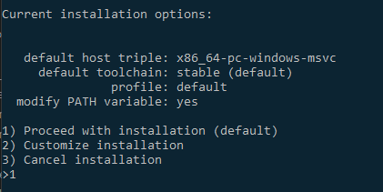
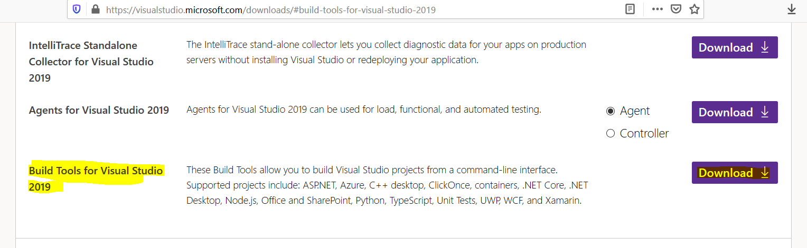
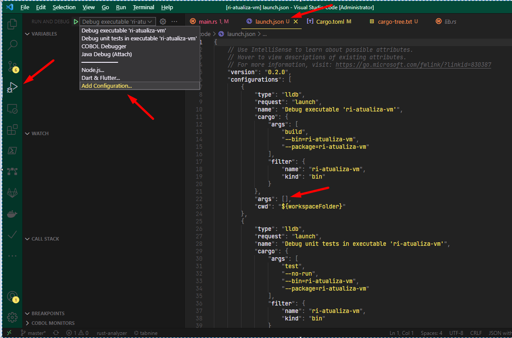

Funcionamento do treinamento
Bem vindo ao treinamento da linguagem Rust.
O layout do treinamento é no formato book, dividido em capítulos.
À esquerda possui a lista dos capítulos que podem ser navegados.
Para navegar entre os capítulos anteriores e próximos é possível utilizar as setas < > na área principal do texto.
No topo superior existem ícones para ocultar a lista de capítulos, mudar o tema (inclusive para tema claro e escuro) e pesquisar conteúdo sobre o livro.
Preparação para o treinamento
Instalação no Windows
Para instalação no Windows siga os seguintes passos:
-
Baixe o instalador do Rust 64 bits.
-
Selecione a opção padrão:

-
O compilador do Rust precisa de um linker externo, para isso baixe o instalador do Visual Studio.
-
Selecione Build Tools for Visual Studio 2019:

- Para reduzir o tamanho da instalação do Visual Studio selecione:
Verificando instalação
Configure se instalou o compilador corretamente:
rustc --version
Instalação no WSL ou Linux
No terminal do Windows entrar no WSL através do comando wsl
Instalar requisito para o Rust:
sudo apt install build-essential
sudo apt install libssl-dev
Instalar o Rust:
curl --proto '=https' --tlsv1.2 -sSf https://sh.rustup.rs | sh
Confirme todas opções com o default. Ao final execute o comando para atualizar a variáveis de ambiente necessárias:
source $HOME/.cargo/env
Extensões do VSCode
Edição de fonte de dentro do WSL:
ms-vscode-remote.remote-wsl
Edição de fonte em VM Linux:
ms-vscode-remote.remote-ssh
Language Server do Rust:
matklad.rust-analyzer
Formator de arquivos toml:
bungcip.better-toml
Debuger do Rust:
vadimcn.vscode-lldb
Auxiliar do Cargo:
panicbit.cargo
Validador de dependências Crates
serayuzgur.crates
Error lens:
usernamehw.errorlens
Configurações do VSCode
Adicionar no settings.json:
"rust-analyzer.checkOnSave.command": "clippy",
"rust-analyzer.diagnostics.disabled": ["macro-error"],
Playground (execução via web)
Para testes rápidos pode ser útil usar o playground do Rust:

Introdução
A Programação Orientada a Objetos aumentou a produtividade em comparação a Programação Estruturada, principalmente devido a sua característica de abstração que permite um entendimento mais próximos à realidade humana. Entretanto programar com objetos envolve trabalhar com referências, que com o passar do tempo se provou criar uma série de problemas que antes não existiam. Podemos fazer uma analogia ao COBOL estruturado, quando que ocorreria um null pointer exception ou memory leak?
De acordo com engenheiros do Google e da Microsoft, 70% dos bugs são causados por erros ao manipular memória e objetos.
Nesse aspecto podemos dizer que Programação Estruturada é mais segura que a POO.
Por que Rust?
Rust surgiu para permitir programar através de vários paradigmas sem correr os riscos de manipular referências.
O inventor do conceito de null, Tony Hoare, hoje considera que esse foi o seu erro de 1 bilhão de dólares, devido ao custo de ter que prevê-lo, o custo do efeito negativo de quando ocorre erro e mais o custo para corrigi-lo. Rust é uma das poucas linguagens que conseguiu eliminar definitivamente o uso do null.
O compilador impede muitos bugs em tempo de compilação, inclusive concorrência entre threads. Isso permite que sejam criados programas extremamente robustos.
O compilador do Rust traz para si a responsabilidade de impedir erros, tirando o máximo possível das mãos do programador. Inclusive o controle de alocação de memória. Pelo fato do compilador resolver esta alocação em tempo de compilação, acaba sendo desnecessário haver Garbage Collection. Além disso, boa parte das variáveis são alocadas na memória stack, que é bem mais rápida que a memória heap. Outra característica do compilador é o zero-cost abstraction, onde a maneira que o programador estrutura o código não afeta o resultado final. Como resultado de tudo isso seus programas são extremamente rápidos.
Rust é uma linguagem inovadora, pois é a única que conseguiu conciliar alto desempenho com segurança.

Segundo engenheiros do Facebook, para adotar uma tecnologia não basta ser um pouco melhor, tem que ser muito melhor.
Existe um custo para aprender e outro custo contínuo para mantê-la. Engenheiros do Facebook consideram Rust uma linguagem "10 vezes" melhor do que outras: o custo de se detectar um bug em compilação é de várias ordens menor do que em execução ou em produção.
Rust é free e opensource. Gera código binário nativo para diversas plataformas. Não possui runtime nem virtual machine, ou seja, seu executável pode ser executado de maneira muito simples. Possui moderno gerenciador de pacotes e grande variedade de bibliotecas.
Rust é baixo nível?
Rust é uma linguagem multi-paradigma, permite trabalhar de forma estruturada, orientada a objetos e funcional. Existe um mito que Rust serve somente para baixo nível. Na verdade serve tanto para baixo nível quanto para alto nível, onde podemos afirmar que Rust é uma das linguagens mais completas que existe. Alguns consideram como alternativa ao C++ e outros como alternativa ao Go. Rust possui várias abstrações de alto nível, algumas inclusive que não existem em outras linguagens.

No Facebook inicialmente pensou-se que Rust seria adotado mais facilmente por programadores de C++, porém foram os programadores de Python que mais se identificaram com a linguagem.
Curva de aprendizado e complexidade
Por permitir fazer um monte de coisas é natural ter mais coisas para aprender. Podemos comparar ao COBOL, com uma curva de aprendizado semelhante.
O Facebook concluiu que seus programadores demoravam até dois meses para se sentirem produtivos.
Então não devemos nos frustrar em não aprender Rust em uma semana. E como em muitas linguagens, não precisamos aprender tudo para desenvolver algumas aplicações. Por exemplo, um programador Java não precisa dominar generics, interfaces, lambdas e threads para fazer alguns programas. Rust, por permitir vários paradigmas, pode fornecer algumas opções para contornarmos e alcançarmos o objetivo.
Criar software seguro envolve uma dedicação maior a curto prazo, mas ao longo prazo ganha-se tempo por gerar menos manutenção. Pense a construção de software como sendo uma construção de um prédio. É mais fácil ir empilhando somente tijolos do que fazer vigas e colunas. Porém se for só empilhar tijolos, assim que vai subindo os andares as coisas começam a ficar mais perigosas. Rust funciona mais ou menos assim: a construção é mais rigorosa, mas permite expandir de uma forma bem mais robusta.
Aprender a programar em Rust é como aprender a programar pela primeira vez. Muitos dos conceitos que aprendemos em outras linguagens não ajudarão, inclusive eventualmente teremos que desaprender algumas coisas.
Um fato que vale a pena reforçar: se você está fazendo algo errado em Rust o programa simplesmente não compila. Em outras linguagens não fazer certo muitas vezes é sinônimo de erro de execução. Em Rust isso dificilmente ocorre. Ou seja, se alguém tiver dificuldade em aprender Rust não significa que ele estará fazendo programas errados. Pode ser difícil programar em Rust, mas é muito fácil de programar certo em Rust.
Production ready
Rust começou a ser desenvolvida em 2010 e a versão 1.0 foi lançada em 2015. Hoje Rust é usado em produção por grandes empresas, tal como AWS, Microsoft, Google, Facebook, Apple, SAP, Oracle, etc.
Até a pouco tempo Rust era mantido pela Mozilla (desenvolvedora do Firefox), mas agora existe a Rust Foundation, que funciona independente, sendo patrocinada por: AWS (Amazon), Google, Facebook, Huawei, Microsoft e Mozilla.
 Estas empresas, além de manter a fundação financeiramente, também mantém seus próprios times para trabalhar no compilador.
Então são 6 grandes empresas pagando salários de programadores para trabalharem focados no Rust. Além destas, outras empresas
menores fazem o mesmo e vários outros programadores contribuem de forma independente.
Isso resulta que hoje há muito mais programadores trabalhando no Rust do que no Java (900 contra 200, consultando commits dos últimos meses).
Estas empresas, além de manter a fundação financeiramente, também mantém seus próprios times para trabalhar no compilador.
Então são 6 grandes empresas pagando salários de programadores para trabalharem focados no Rust. Além destas, outras empresas
menores fazem o mesmo e vários outros programadores contribuem de forma independente.
Isso resulta que hoje há muito mais programadores trabalhando no Rust do que no Java (900 contra 200, consultando commits dos últimos meses).
A Rust Foundation foi criada somente no início de 2021, então o fruto do envolvimento das grandes empresas ainda está por aparecer, por isso há uma grande expectativa da linguagem crescer ainda mais em recursos, adoção e ecossistema.
Programar em Rust é muito legal
Ferris, mascote do Rust:

Por cinco anos consecutivos Rust é considerada a linguagem mais amada do mundo, segundo pesquisa do Stackoverflow. Apesar de ter uma curva de aprendizado maior que outras linguagens atuais, geralmente acaba conquistando o programador principalmente pela sua sintaxe moderna e característica de gerar programas mais seguros.
O comportamento do compilador é muito amigável, geralmente dá dicas do que podemos estar errando e como podemos resolver. Por exemplo, quando erramos o nome de uma variável ele sugere outras com nomes semelhantes.
A inferência de tipos é muito poderosa, graças ao seu Bidirectional Typechecking. Muitas vezes não precisamos declarar o tipo das variáveis e ficamos com a impressão que estamos programando em uma linguagem dinamicamente tipada, entretanto sem correr o risco de ter seus possível erros.
Por se relativamente nova, conseguiu se adaptar muito bem a editores modernos tal como VSCode, onde possui um language server com muitos recursos.
Ótima documentação e comunidade vibrante
Existe muita fonte de informação sobre Rust. Esses são os principais:
Aprender:
- Learn book oficial
- Take your first steps with Rust (oficial Microsoft)
- Tour of Rust
- Easy Rust
- Rust Gentle
- Artigo para programadores Java
- Rust Language Cheat Sheet
Algoritmos de exemplo:
Exercícios:
Fóruns e ajuda:
Novidades no mundo Rust:
Padrões sugeridos:
Criar e executar projeto
Cargo é o gerenciador de projetos do Rust. É o equivalente ao Maven do Java.
Usamos ele para criar projeto, compilar, executar, etc.
Para criar projeto:
cargo new treinamento-rust
Será criado um diretório treinamento-rust. Vamos entrar nele:
cd treinamento-rust
Esta é a estrutura de diretório quem contém o projeto:
treinamento-rust/
|
|-src/
| |
| `-main.rs
|
|-.gitignore
|
`-Cargo.toml
O arquivo Cargo.toml contém configurações do projeto, principalmente dependências.
Por padrão Rust vem com uma biblioteca nativa bem enxuta, então é comum adicionarmos dependências. Outro motivo de ter algumas bibliotecas desacopladas do compilador é que podemos ficar com uma versão estável do compilador e pode atualizar as bibliotecas de forma independente.
O arquivo src/main.rs contém o código fonte principal, com um "Hello World":
fn main() { println!("Hello, world!"); }
Para executar o programa:
cargo run
Aparecerá como resultado:
Compiling treinamento-rust v0.1.0 (C:\Users\Vanius\Documents\rust\treinamento-rust)
Finished dev [unoptimized + debuginfo] target(s) in 1.57s
Running `target\debug\treinamento-rust.exe`
Hello, world!
O compilador algumas informações da compilação e por fim o resultado do programa com a frase Hello, world!
Podemos executar o programa para exibir somente o resultado, através de :
cargo run -q
Para compilar o programa devemos fazer:
cargo build
Esse comando gera o binário executável dentro do diretório target/debug/
Para compilar o programa e gerar o binário otimizado final (bem mais rápido):
cargo build --release
Para executar testes unitários:
cargo test
Hello, world!
Como vimos no capítulo anterior, criamos o arquivo src/main.rs, que contém o "Hello, world!":
fn main() { println!("Hello, world!"); }
Nesse exemplo já vemos algumas características do Rust, que é muito comum a outras linguagens conhecidas.
O prefixo fn define o uma função, que é um bloco que contém um conjunto de comandos.
As funções permitem parâmetros através de parênteses (). Quando não possui parâmetros deve informá-los igualmente.
Chaves {} são delimitadores de blocos.
Todo comando termina com ponto-e-vírgula ;.
Aspas duplas "" delimitam String.
O comando println! exibe a String na tela.
O sinal de exclamação ! significa que o comando é uma "macro", que é um recurso de "meta programação" do Rust. As macros são comandos que são expandidos em tempo de compilação, como se fosse um pré-compilador embutido na linguagem. O interessante desse mecanismo é que funciona como um comando real para o programador.
Executar programa
Como falamos anteriormente podemos executar o programa pela linha de comando cargo run.
O language server do Rust permite o recurso de executar o programa de dentro do editor VSCode.
Se tudo estiver certo acima do main deve ter um ícone para executar e outro para debugar.
Instalação de programa
Quando instalamos o Rust ele insere no PATH o diretório %USERPROFILE%\\.cargo\\bin (ou C:\\Users\\%USERNAME%\\.cargo\\bin).
Nesse diretório também serve para conter os programas que querermos que seja acessível de qualquer diretório.
Para que o nosso programa seja compilado e o executável seja copiado para lá deve executar o comando:
cargo install --path .
Convenção de nomes
Variáveis, funções, módulos, métodos devem ter formato snake_case.
Constantes e variáveis estáticas devem ter formato SCREAMING_SNAKE_CASE.
Classes, tipo, enumerados devem ter formato CamelCase.
Mais detalhes em: Convenção de nomes padrão
Padrões de comentários
Para definir comentário é bastante semelhante a outras linguagens.
Comentário de linha //
Comentário de bloco /* */
Comentário para documento ///
Mais detalhes em: Padrões de comentários
Declarar variável
Para declarar uma variável usamos o comando let. O sinal de = faz a atribuição do valor inicial.
O comando println! permite exibir o conteúdo fazendo substituição das chaves no texto.
fn main() { let i = 1; println!("i = {}", i); }
Interpolação
Como já foi explicado, Rust vem com uma biblioteca padrão bem reduzida.
Para permitir interpolação devemos inserir o ifmt no Cargo.toml:
[dependencies]
ifmt = "0.3.3"
Essa dependência inclui o comando iprintln! entre outros.
Para fazer o import dessa biblioteca basta pressionar ctrl + . em cima da palavra iprintln! e selecionar no menu Import ifmt::iprintln. Será inserida linha use ifmt::iformat; no topo do fonte.
Então agora podemos fazer:
fn main() { let i = 1; iprintln!("i = {i}"); }
Esse recurso é extremamente poderoso, pois a interpolação é resolvida em tempo de compilação,
então mesmo estando dentro de uma string o compilador avisará se a variável não existir.
Também podem ser usadas funções com interpolação.
Tipo explícito
Observe que no exemplo acima não definimos o tipo da variável.
O tipo acabou sendo inferido implicitamente, ou seja, o compilador utilizou o tipo do valor que está sendo associado.
A inferência de tipo do Rust é uma das suas principais característica. Muitas vezes temos a impressão que estamos trabalhando numa linguagem dinamicamente tipada.
Podemos explicitar o tipo, por exemplo:
fn main() { let i: i32 = 1; println!("i = {}", i); }
O i32 define uma variável numérica inteira de 32 bits.
A linha acima pode declarar como let i = 1;.
A seguir vamos ver outros tipos inteiros.
Tipos numéricos inteiros
Rust permite inteiros com sinal ou sem sinal, e também com diferente comprimentos:
| Length | Signed | Unsigned |
|---|---|---|
| 8-bit | i8 | u8 |
| 16-bit | i16 | u16 |
| 32-bit | i32 | u32 |
| 64-bit | i64 | u64 |
| 128-bit | i128 | u128 |
| arch | isize | usize |
Atribuição de variáveis
Rust traz o moderno conceito sobre imutabilidade, onde por padrão as variáveis não podem ser alteradas depois que seu valor inicial foi definido.
Para permitir a variável ser alteradas devemos informar a palavra mut após o let:
fn main() { let mut i = 0; println!("i = {}", i); i = 1; println!("i = {}", i); }
Constantes
Para definir constante utilizamos a palavra const e termos que definir o tipo:
fn main() { const MAX_VALUE: u32 = 100; let i = MAX_VALUE; println!("max value = {}", i); }
Observações:
Inicialmente pode parecer que let sem mut funciona como const, mas são diferente.
As variáveis imutáveis, por mais que não possamos alterar, acabam alocando memória, diferente
das constantes, que são expressas em tempo de compilação.
Operações aritméticas
As operações aritméticas são iguais a outras linguagens. Por exemplo:
fn main() { let mut i = 0; println!("{}", i); i = 2 + 5; println!("{}", i); }
Para incrementar variáveis podemos utilizar +=:
fn main() { let mut i = 0; i += 1; println!("i = {}", f); }
Tipos pontos flutuante
Existem os tipos f32 e f64. Para indicar um número como ponto flutuante devemos informar o ponto decimal:
fn main() { let f = 1.0; println!("f = {}", f); }
Type cast
Conversões type conversion (casting) podem ser feitas pela palavra as:
fn main() { let decimal = 65.4321_f32; // Error! No implicit conversion let integer: u8 = decimal; // FIXME ^ Comment out this line // Explicit conversion let integer = decimal as u8; let character = integer as char;
Tipo boolean
Tipos lógicos bool possuem o valor false e true:
fn main() { let result = false; println!("result = {}", result); }
Operações lógicas
As operações lógicas também são iguais a outras linguagens. Por exemplo:
fn main() { let mut result = false; println!("{}", result); result = result == true; println!("{}", result); result = result || true; println!("{}", result); result = result && true; println!("{}", result); result = result != true; println!("{}", result); }
Vetor (Array)
O tipo array é semelhante a outras linguagens, os caracteres []
indicam que se trata de vetor e os elementos são delimitados por vírgula:
fn main() { let a = [1, 2, 3, 4, 5]; println!("a = {:?}", a); }
Observe que no println! usamos a substituição {:?} ao invés de {}.
Isso por que o vetor não implementa a interface Display,
que seria equivalente ao Java a um objeto sobre-escrever o método toString.
Veremos mais detalhes disso em outro capítulo.
A tipagem explícita é [T; n], onde T é tipo e n é o tamanho:
fn main() { let a: [i32; 5] = [1, 2, 3, 4, 5]; println!("a = {:?}", a); }
array é um vetor estático, ou seja, não podemos alterá-lo.
Para alterar existe outra estrutura de dados chamada Vec (que veremos em outro capítulo).
Semelhante como no Java, onde existe array e ArrayList.
Tipo range
Para representar um range (faixa) devemos usar a notação início..fim, sendo que o fim não é incluído.
Ou seja, 1 a 10 é representado com 1..11. Essa característica existe para facilitar percorrer vetor onde o tamanho é indicado no fim, tal como 0..lista.len(). Se quer que o fim seja incluído, deve usar o sinal de =, por exemplo 1..=10.
Exemplos:
fn main() { let r = 0..10; let a = 9; let b = 10; let f = a..b; }
O range também é utilizado para trabalhar com slice (fatia) de vetor. Por exemplo:
fn main() { let arr = [0, 1, 2, 3, 4]; assert_eq!(arr[ .. ], [0,1,2,3,4]); assert_eq!(arr[ .. 3], [0,1,2 ]); assert_eq!(arr[ ..=3], [0,1,2,3 ]); assert_eq!(arr[1.. ], [ 1,2,3,4]); assert_eq!(arr[1.. 3], [ 1,2 ]); assert_eq!(arr[1..=3], [ 1,2,3 ]); }
Em outro capítulo veremos que podemos usar ranges no comando for.
Tipo tupla
As tuplas são coleções de tipos diferentes, construídas no formato (T1, T2, T3, ...).
fn main() { let t = (1u32, false); println!("{:?}", t); }
Podemos fazer a desconstrução das tuplas pela sintaxe let (a, b, ...) =:
fn main() { let t = (1u32, false); let (i, b) = t; println!("{} {}", i, b); }
É possível acessarmos os valores através do índice pela sintaxe .i:
fn main() { let t = (1u32, false); println!("{} {}", t.0, t.1); }
Variável place holder
Em algumas situações queremos ignorar parte de uma tupla, porém por padrão o compilar
emite alerta se uma variável não for utilizada.
Podemos imaginar o place holder como sendo o filler do COBOL,
serve apenas preencher uma necessidade do compilador.
Exemplo:
fn main() { let t = (1u32, false); let (i, _) = t; println!("{}", i); }
As varáveis foo na verdade podem até ter nome, iniciando com underscore, tal como _status.
Tipo caractere
Tipos char são definidos com aspas simples:
fn main() { let c = '*'; println!("c = {}", c); }
Tipo texto
Existem dois tipos de String: String e &str, que possuem as seguintes diferenças:
Stringé uma string dinâmica alocada na memória heap, podendo aumentar de tamanho.&stré uma referência em algum lugar na memória (heap ou stack) de uma cadeia de caracteres, não pode mudar de tamanho. Também pode ser chamado de slice.
Para facilitar entendimento, podemos fazer um comparativo ao Java, com os tipos String e StringBuilder.
Quando declaramos uma literal é assumido o tipo &str:
fn main() { let s = "Rech Informática"; println!("s = {}", s); }
Vamos ver um exemplo do tipo String:
fn main() { let s = String::from("Rech Informática"); println!("s = {}", s); }
Nesse exemplo já vemos mais algumas características do Rust. Os dois sinais de : significa que é delimitador de uma função estática da classe.
No caso from é um construtor da classe.
Um ponto . significa um delimitador de método dinâmico.
Podemos converter um slice String &str para String através do método to_string:
fn main() { let hello = "Hello".to_string(); println!("hello = {}", hello); }
Podemos converter uma String para &str, definindo o caractere & antes do String, que funciona como uma referência:
fn main() { let s: &str = &String::from("Rech Informática"); println!("s = {}", s); }
Por causa disso para definirmos funções geralmente utilizaremos o &str como tipo de parâmetros, por ser mais compatível e permitir literais.
É natural haver uma dificuldade inicial para lidar e entender os dois tipos de String, mas como foi dito no capítulo de introdução: se compilar então você está fazendo certo, você não terá erros ou comportamentos inesperados.
Concatenação de string
Rust permite a concatenação de String com o caractere +, mas deve ter o formato:
#![allow(unused)] fn main() { let s = String + &String + &String; }
Por exemplo:
#![allow(unused)] fn main() { fn test_concat() { let nome = "Rech".to_string(); let segundo_nome = "Informática".to_string(); let result: String = nome + &segundo_nome; } }
Na concatenação não é possível usar &str diretamente,
há necessidade de converter para String.
Existem várias possibilidades para fazer concatenação.
Uma das possíbilidades é usar o método push_str.
fn main() { let mut s = String::from("Rech"); s.push_str(" "); s.push_str("Informática"); println!("s = {}", s); }
Outra forma bem comum, e a mais recomendada, é através da macro format!:
#![allow(unused)] fn main() { fn method_1() { let hello = "Hello"; let world = "world"; let result = format!("{}, {}!", hello, world); assert_eq!("Hello, world!", result); } }
A dependência ifmt também declara a macro iformat!, que permite fazermos uma concatenação bastante elegante:
#![allow(unused)] fn main() { fn method_2() { use ifmt::iformat; let hello = "Hello"; let world = "world"; let result = iformat!("{hello}, {world}!"); iprintln!("{result}"); assert_eq!("Hello, world!", result); } }
Podemos declarar um array e fazer concat ao final:
#![allow(unused)] fn main() { fn method_3() { let world = "world"; let result = ["Hello", ", ", world, "!"].concat(); assert_eq!("Hello, world!", result); } }
Ou também fazer um join informando um delimitador:
#![allow(unused)] fn main() { fn method_4() { let world = "world"; let result = ["Hello", world, "!"].join(" "); assert_eq!("Hello world !", result); } }
A macro concat! permite concatenação, mas apenas de literais, não permite informar variáveis como na format!:
#![allow(unused)] fn main() { fn method_5() { let result = concat!("Hello", ", ", "world", "!"); assert_eq!("Hello, world!", result); } }
Substring
Existe várias maneiras para obter substring de uma outra string. Uma delas é trabalhar com range inicial e final, por exemplo:
fn main() { let valor = &"CAMPO=valor"[6..11]; println!("{}", valor); }
O range deve ser informado números do tipo usize, então eventualmente pode ser necessário fazer
type cast tal como i as usize.
Outra forma é converter a string para vetor de chars e obter os elementos desejados, ao final converter para string:
fn main() { let valor: String = "CAMPO=valor".chars().skip(6).take(5).collect(); println!("{}", valor); }
Uma situação muito como é obter a string a partir um prefixo, para isso existe o método strip_prefix
que é muito útil:
fn main() { let valor = "CAMPO=valor".strip_prefix("CAMPO=").unwrap(); println!("{}", valor); }
Converter tipos para String
Todos tipo possuem o método to_string, por exemplo:
fn main() { let x: u32 = 10; let s: String = x.to_string(); println!("{}", s); }
Fazer parse de String para numérico
Os tipos &str e String possuem o método parse que faz a conversão para outro tipo destino.
Como essa função pode falhar, então ela retorna um Result que veremos em outro capítulo.
Por enquanto vamos obter o valor através de seu método unwrap, expect (que permite passar uma mensagem).
Exemplo:
fn main() { let guess: u32 = "42".parse().expect("Not a number!"); }
O exemplo acima fazia a conversão de acordo com o tipo explícito da variável destino.
Porém é possível informar o tipo como um parâmetro generic no método parse. Esse tipo sintaxe usando ::<> é conhecido por turbo fish.
fn main() { let my_int = my_string.parse::<i32>().expect("Not a number!"); }
Escape e caracteres especiais em String
Como em muitas linguagens é possível escapar caracteres especiais com \, tal como quebra de linha por \n.
É possível definir caracteres ASCII por \xXX e UTF-8 por \u{XXXX}.
Também é possível quebrar a linha com enter e continuar a linha com \ ao final.
fn main() { // You can use escapes to write bytes by their hexadecimal values... let byte_escape = "I'm writing \x52\x75\x73\x74!"; println!("What are you doing\x3F (\\x3F means ?) {}", byte_escape); // ...or Unicode code points. let unicode_codepoint = "\u{211D}"; let character_name = "\"DOUBLE-STRUCK CAPITAL R\""; println!("Unicode character {} (U+211D) is called {}", unicode_codepoint, character_name ); let long_string = "String literals can span multiple lines. The linebreak and indentation here ->\ <- can be escaped too!"; println!("{}", long_string); }
As vezes para pode atrapalhar ficar sempre escapando os caracteres tipo "F:\\SIGER\\21.10\\fon".
Nesses casos podemos usar as raw strings com r" e r#" (para considerar " como raw):
fn main() { let raw_str = r"Escapes don't work here: \x3F \u{211D}"; println!("{}", raw_str); // If you need quotes in a raw string, add a pair of #s let quotes = r#"And then I said: "There is no escape!""#; println!("{}", quotes); // If you need "# in your string, just use more #s in the delimiter. // There is no limit for the number of #s you can use. let longer_delimiter = r###"A string with "# in it. And even "##!"###; println!("{}", longer_delimiter); }
Declarar funções
Para declarar funções e executá-las fazemos semelhante a outras linguagens:
fn main() { println!("Hello, world!"); another_function(); } fn another_function() { println!("Another function."); }
Passagem de parâmetros
Passar parâmetros também é familiar:
fn main() { another_function(5, 6); } fn another_function(x: i32, y: i32) { println!("The value of x is: {}", x); println!("The value of y is: {}", y); }
Todo bloco pode ser uma expressão
Rust possui uma interessante característica do paradigma funcional que todo bloco pode funcionar como uma expressão,
ou seja, pode retornar um valor.
Para indicar um retorno basta a última linha não conter ;. Por exemplo:
fn main() { let v = { let a = 1; let b = 2; a + b }; println!("from block: {}", v); }
Vale observar que esse tipo de sintaxe a linguagem Java implementou superficialmente, apenas funciona em lambdas, tal como .filter(emp -> emp.age < age).
Este recurso pode ser usado no controle de fluxo de outras operações que veremos em outro capítulo.
Função com retorno
Para declarar uma função indicamos o tipo de retorno por -> e seguimos a lógica da última linha não ter ;:
fn main() { let x = five(); println!("The value of x is: {}", x); } fn five() -> i32 { 5 }
Também podemos retornar o valor de função a partir do comando return, nesse caso colocamos o ;.
fn main() { let a = 10; println!("a = {}", foo(a)); } fn foo(a: i8) -> i8 { if a > 0 { return 5; }; a + 1 }
Atributos de itens
Os itens (funções, enums, structs, etc) podem ter definido attributes,
onde associa um meta-dado ou altera o comportamento. Possui o formato #[Attr] ou #![Attr].
Funcionam parecido como as annotations do Java.
Vamos ver um exemplo para condicionar funções por compilação da plataforma:
#![allow(unused)] fn main() { #[cfg(target_os = "windows")] fn list_mapped_drive() { } #[cfg(not(target_os = "linux"))] fn distro_linux() { } }
Esse atributo acima também pode ser definido em bloco de código.
Função de teste
Criar funções de testes unitários em Rust é bem prático. Por padrão as funções de testes são declaradas ao fim no mesmo fonte. Isso facilita pois não precisamos ficar alternando entre vários fontes.
Para definir função de teste unitários basta declarar o atributo #[test]:
#![allow(unused)] fn main() { #[test] fn test() { } }
A extensão do VSCode deve exibir um ícone de play acima da função.
Essa forma de atribuição por #[xxx]
Observe que o language server do Rust disponibilizou um play para executar a função de teste. Esse recurso é muito prático enquanto estamos prototificando uma rotina, pois podemos declarar a função de testar para executar a nossa função no mesmo fonte.
Funções de assertação:
#![allow(unused)] fn main() { assert!(true); let a = 1; let b = 1; let c = 2; assert_eq!(a, b); assert_ne!(a, c); }
Definir pacote de teste
O ideal é isolar as funções de testes em um módulo, que pode ser declarado ao final do código fonte:
#![allow(unused)] fn main() { #[cfg(test)] mod tests { use super::*; #[test] fn test() { } } }
A linha use super::* serve par tornar as funções do fonte visíveis para o módulo de teste.
Para executar os testes devemos rodar o comando do cargo:
cargo test
Criar lib (biblioteca)
As libs são projetos que não geram executável, que podem declarar itens para serem reaproveitados em outros projetos.
Vamos criar uma lib chamada `my-lib para usarmos no nosso projeto, onde temos que criá-lo no mesmo diretório:
cd ..
cargo new my-lib --lib
cd my-lib
code .
A principal diferença é que ao invés do main.rs tempos o lib.rs.
Nesse fonte iremos definir as nossas funções. Para os itens serem visíveis externamente temos que definir o prefixo pub:
#![allow(unused)] fn main() { pub fn double(num: i32) -> i32 { num * 2 } }
No nosso projeto podemos incluir a dependência com via relativa de diretório:
[dependencies]
my-lib = { path = "../my-lib" }
No fonte, devemos fazer o import com use, onde definimos o nome da lib e o nome da função que queremos importar.
Observe que no nome da lib ao invés de - (hífen) devemos trocar por _ (underline) e que usamos delimitador de
pacote e função com :::
use my_lib::double; fn main() { let d = double(1); println!("{}", d); }
Documentação
No itens de Rust (funções, struct, enuns, etc) podemos definir comentários no código fonte que resultarão em documentos.
Para isso devemos definir comentário com três barras ///
Para criar um trecho com código Rust devemos declarar um bloco com ```rust e terminar com ```
#![allow(unused)] fn main() { /// Retorna o dobro /// Exemplo: /// ```rust /// use my_lib::double; /// assert_eq!(double(1u32), 2u32); /// ``` pub fn double(num: u32) -> u32 { num * 2 } }
Observe que o código declarado na documentação pode ser executado, não é apenas um texto ilustrativo. Isso garante que a documentação estará sempre condizente com a implementação. E outra coisa bastante interessante, esse código é executado com o
cargo test, ou seja, esse código funciona como documentação e teste unitário, evitando duplicidade.
A documentação com código executável funciona apenas para libs, mas está sendo estudado para funcionar em projetos executáveis também.
Para gerar o documento:
cargo doc
Os documentos html serão gerados no diretório target/doc.
Para gerar o documento e abrir o navegador devemos executar:
cargo doc --open
Existe também o comando rustdoc para gerar doc de um arquivo avulso.
Por exemplo, para gerar o docs/doc/README.html a partir do README.md
rustdoc README.md
Controle de fluxo
Neste capítulo vamos ver as principais estruturas de controle de fluxo
if
A estrutura if e else funcionam semelhante como em outras linguagens:
fn main() { let number = 3; if number < 5 { println!("condition was true"); } else { println!("condition was false"); } }
É obrigatório definir o bloco com chaves {}.
Operação ternária
Lembre da característica de Rust que todo bloco pode funcionar como uma expressão.
A operação ternária acaba sendo o retorno do bloco if ou else. Exemplo:
fn main() { let condition = true; let number = if condition { 5 } else { 6 }; println!("The value of number is: {}", number); let compare = if 12 * 15 > 150 { "Bigger" } else { "Smaller" }; println!("The value of number is: {}", compare); }
Observe Para o exemplo acima funcionar o bloco do if e o bloco do else devem retornar o mesmo tipo.
while
Laço de repetição condicional:
fn main() { let mut number = 3; while number != 0 { println!("{}!", number); number -= 1; } println!("LIFTOFF!!!"); }
loop
O loop é equivalente ao while true que possui a finalização condicionada. Pode definir um valor de retorno. Por exemplo:
fn main() { let mut counter = 0; let result = loop { counter += 1; if counter == 10 { break counter * 2; } }; println!("The result is {}", result); }
O comando break interrompe a repetição do bloco e retorna um valor para o bloco.
for
Para percorrer um iterator podemos usar o comando for.
fn main() { let a = [10, 20, 30, 40, 50]; for element in a.iter() { println!("the value is: {}", element); } }
O método iter retorna um iterator a partir do array. Seria equivalente ao Stream do Java.
Veremos mais detalhes sobre iterators em outro capítulo.
O comando for também pode percorrer um range:
fn main() { for i in 0..10 { println!("the value is: {}", i); } }
match
A estrutura match é semelhante ao switch de outras linguagens:
fn main() { let i = 5; match i { 0 => println!("zero"), 1 => println!("um"), x => println!("inesperado {}", x). } }
Somente um bloco é executado de cada vez (não é necessário fazer um break). Cada bloco é chamado de match arm.
Outro comportamento do match é que ele é exaustivo, ou seja, devemos prever todas as possibilidades.
Isso é uma questão de segurança, para evitar erro do programador se deparar com uma situação inesperada.
No exemplo acima todas as possibilidades são previstas graças última condição,
onde a variável x (pode ter qualquer nome) captura o valor que não caiu nas condições acima.
Podemos testar diferentes valores pelo caractere | (ou). Para representar uma faixa de valores pode usar os caracteres ...
Poe exemplo:
fn main() { let number = 13; println!("Tell me about {}", number); match number { 1 => println!("One!"), 2 | 3 | 5 | 7 | 11 => println!("This is a prime"), 13..=19 => println!("A teen"), x => println!("Ain't special: {}", x), } }
Assim como outras estruturas, match pode funcionar como uma expressão que retorna um valor.
Isso permite construir códigos bem elegantes tal como:
fn main() { let m = 1; let month = match m { 1 => "jan", 2 => "feb", 3 => "mar", _ => "other", }; println!("{}", month); }
Quando match funciona como expressão todos os arms devem ter o mesmo retorno.
A exceção é caso forçarmos uma saída da função por return:
fn main() { let m = 1; let month = match m { 1 => "jan", 2 => "feb", 3 => "mar", _ => return, }; println!("{}", month); }
Nos exemplos acima cada arm retornava o valor numa única linha, porém o arm pode funcionar como
um bloco através das chaves, tendo a última linha como retorno:
fn main() { let m = 1; let month = match m { 1 => { println!("First month"); "jan" }, 2 => "feb", 3 => "mar", _ => "other", }; println!("{}", month); }
Rust e a Orientação a Objetos
Existe uma discussão comum se Rust é orientado a objetos.
Antes de chegarmos a uma conclusão vamos revisar os principais princípios da programação Orientada a Objetos:
-
Abstração
- Permitir um conjunto de propriedades e métodos funcionar sobre uma identidade
- Essa identidade poder ser reutilizada (objeto) através uma prototipação (classe)
-
Encapsulamento
- Indicar quais propriedades e métodos deseja tornar público
-
Polimorfismo
- Generalizar objetos de diferentes implementações (classes)
-
Herança
- Expandir subtipo de uma classe para outras em forma hierárquica, reaproveitando propriedades e métodos
Rust possui todas as características acima, exceto herança. Mas hoje em dia herança é considerado um anti-pattern que deve ser evitado. Ou seja, então teoricamente programar em Rust não fica muito distinto de um programa Java que segue as boas práticas de programação.
Boas práticas sobre OO
Em geral a OO antiga diz que estado faz parte do objeto, onde seria um atributo. Mas muitas vezes devem ser tratados como objetos distintos.
A Orientação a Objetos tradicionalmente prega que objetos representam coisas. Mas na verdade objetos operam sobre coisas.
Ou seja:
Operar => comportamento Coisa => possui estado
Podemos resumir esse tipo de pensamento da seguinte forma:
objeto.operacao(estado)
estado = objeto.operacao()
objeto é uma classe que dita comportamentos sobre outra classe de estado.
Ter essa distinção em mente nos ajuda a evitar de haver uso excessivo de mutabilidade (quando fazemos set).
Declarar e instanciar objetos
Para declarar objetos em Rust usamos a sintaxe struct:
#![allow(unused)] fn main() { struct User { id: u32, name: String, } }
Os campos são delimitados por vírgula ,.
Para instanciar um objeto é usada uma sintaxe muito parecida com Javascript:
struct User { id: u32, name: String, } fn main() { let user = User { id: 19, name: String::from("Vanius"), }; println!("User: {} {}", user.id, user.name); }
Observe que ao instanciar um objeto devemos informar o valor de todos os campos declarados. Isso garante que nunca teremos um campo não inicializado. Em outro capítulo iremos abordar como permitir um campo opcional.
Destruturar struct e "campos restantes"
Podemos destruturar um struct em várias variáveis em uma única linha, semelhante como fazemos com tuplas.
struct ThreeDPoint { x: f32, y: f32, z: f32 } fn main() { let point_a: ThreeDPoint = ThreeDPoint { x: 0.3, y: 0.4, z: 0.5 }; // É útil para obter vários campos em um única linha let ThreeDPoint { x: my_x, y: my_y, .. } = point_a; println!("x:{} y:{}", my_x, my_y); }
Quando queremos atribuir a partir de outro struct de mesmo tipo podemos usar dois pontos ..
para pegar os restantes dos campos.
Exemplo:
struct ThreeDPoint { x: f32, y: f32, z: f32 } fn main() { let point_a: ThreeDPoint = ThreeDPoint { x: 0.3, y: 0.4, z: 0.5 }; // É útil quando queremos obter os campos restantes let point_b = ThreeDPoint { z: 0.5, ..point_a }; println!("x:{} y:{} z:{}", point_b.x, point_b.y, point_b.z); }
Declarar função que retorna objeto
Podemos criar uma função para retornar um objeto:
struct User { id: u32, name: String, } fn build_user(id: u32, name: String) -> User { User { id: id, name: name, } } fn main() { let user = build_user(19, String::from("Vanius")); println!("User: {} {}", user.id, user.name); }
Se quisermos alterar o conteúdo temos que declarar como mutável:
struct User { id: u32, name: String, } fn build_user(id: u32, name: String) -> User { User { id: id, name: name, } } fn main() { let mut user = build_user(19, String::from("Vanius")); user.name = String::from("Vanius"); println!("User: {} {}", user.id, user.name); }
Declarar método estático
Vamos supor que queremos tornar a função build_user como um construtor new do struct.
Para isso definimos uma nova sessão chamada impl, informamos qual o struct estamos implementando e declaramos nossa função:
struct User { id: u32, name: String, } impl User { fn new(id: u32, name: String) -> User { User { id: id, name: name, } } } fn main() { let user = User::new(19, String::from("Vanius")); println!("User: {} {}", user.id, user.name); }
Pode parecer estranho declarar funções num bloco separado das variáveis, mas depois quando formos aprender sobre Traits (interfaces) iremos ver que faz sentido.
Perceba que new se transformou em uma função estática e
que acessamos funções estáticas pelos caracteres ::.
Quando já estamos dentro do contexto do struct podemos acessar o seu nome pela palavra Self:
struct User { id: u32, name: String, } impl User { fn new(id: u32, name: String) -> Self { Self { id: id, name: name, } } } fn main() { let user = User::new(19, String::from("Vanius")); println!("User: {} {}", user.id, user.name); }
Declarar método dinâmico
Para declarar um método dinâmico do objeto, devemos informar o primeiro parâmetro na função com &self.
A partir da palavra self conseguimos acessar os campos do objeto de dentro do método,
semelhante como this em Java. Por exemplo:
struct User { id: u32, name: String, } impl User { fn new(id: u32, name: String) -> Self { Self { id: id, name: name, } } fn say_hello(&self) { println!("Hi, I'm {}", self.name); } } fn main() { let user = User::new(19, String::from("Vanius")); user.say_hello(); }
Podemos concluir que dentro do struct podemos acessar métodos estáticos com
Self::e métodos dinâmicos comself..
Método criando getter e setter
Em Rust os getters tem formato tal como field(&self) -> T e os setters formato set_field(&mut self, v: T). Para getters que retornam bool devemos usar is_field(&self) -> bool.
Observe que no setter é utilizado &mut self ao invés de &self.
Isso significa que o método set_field pode acessar os campos de forma mutável. Exemplo:
struct User { id: u32, name: String, } impl User { fn new(id: u32, name: String) -> Self { Self { id: id, name: name, } } fn name(&self) -> String { self.name } fn set_name(&mut self, name: String) { self.name = name; } } fn main() { // user_1 só permite ler campo, não é mutável let user_1 = User::new(19, String::from("Vanius")); println!("user_1: {}", user_1.name()); // user_2 permite ler e gravar campo, pois é mutável let mut user_2 = User::new(19, String::from("Vanius")); user_2.set_name("Roberto"); println!("user_2: {}", user_2.name()); }
Enumerados
No Rust os tipos enumerados possuem algumas possibilidades que outras linguagens não permitem.
Para definir um enumerado em Rust usamos a palavra enum.
No exemplo abaixo definimos o tipo de rede endereço de rede ipv4 ou ipv6:
#![allow(unused)] fn main() { enum IpAddrKind { V4, V6, } }
Declaramos as variantes do enumerado delimitadas por ,.
Acessamos o valor do enumerado pelo delimitador :: logo após o nome do enum.
Podemos declarar uma variável tal como ip_kind: IpAddrKind e esta variável pode conter as valores IpAddrKind::V4 ou IpAddrKind::V6. Exemplo:
enum IpAddrKind { V4, V6, } fn main() { let four = IpAddrKind::V4; let six = IpAddrKind::V6; route(four); route(six); } fn route(ip_kind: IpAddrKind) { }
Observe como foram feitas as declarações, atribuições e o teste com if.
Enumerados algébricos
Um grande diferencial do Rust é que os enumerados podem associar valores. E cada variante do enum pode ter diferentes tipos:
enum IpAddrKind { V4(u8, u8, u8, u8), V6(u16, u16, u16, u16, u16, u16, u16, u16), } fn main() { let four = IpAddrKind::V4(192, 168, 0, 1); let six = IpAddrKind::V6(0, 0, 0, 128, 0, 0, 255, 255); route(four); route(six); } fn route(ip_kind: IpAddrKind) {}
Mesmo parecendo serem de tipos de dados totalmente diferente podemos passar como parâmetro na função route.
No exemplo acima V4 e V6 funcionam como tuplas.
Recuperando valores associados de enums com if let
Para obtermos os valores dos enums podemos usar o comando if let.
Seria como dizer algo como "caso variável for tipo enum então capture o valor associado e faça...".
enum IpAddrKind { V4(u8, u8, u8, u8), V6(u16, u16, u16, u16, u16, u16, u16, u16), } fn main() { let four = IpAddrKind::V4(192, 168, 0, 1); let six = IpAddrKind::V6(0, 0, 0, 128, 0, 0, 255, 255); route(four); route(six); } fn route(ip_kind: IpAddrKind) { if let IpAddrKind::V4(a1, a2, a3, a4) = ip_kind { println!("ipv4: {}.{}.{}.{}", a1, a2, a3, a4); } if let IpAddrKind::V6(a1, a2, a3, a4, a5, a6, a7, a8) = ip_kind { println!("ipv6: {}:{}:{}:{}:{}:{}:{}:{}", a1, a2, a3, a4, a5, a6, a7, a8); } }
No if let os valores associados ao enum são acessados através de variáveis que valem somente para o escopo do if.
Recuperando valores associados com match
Semelhante como foi feito com if let, podemos utilizar o match, com a vantagem que podemos testar todas as possibilidades dentro do mesmo bloco:
enum IpAddrKind { V4(u8, u8, u8, u8), V6(u16, u16, u16, u16, u16, u16, u16, u16), } fn main() { let four = IpAddrKind::V4(192, 168, 0, 1); let six = IpAddrKind::V6(0, 0, 0, 128, 0, 0, 255, 255); route(four); route(six); } fn route(ip_kind: IpAddrKind) { match ip_kind { IpAddrKind::V4(a1, a2, a3, a4) => { println!("ipv4: {}.{}.{}.{}", a1, a2, a3, a4); }, IpAddrKind::V6(a1, a2, a3, a4, a5, a6, a7, a8) => { println!("ipv6: {}:{}:{}:{}:{}:{}:{}:{}", a1, a2, a3, a4, a5, a6, a7, a8); } } }
Uma das formas mais comuns de se transformar um enum é utilizar o comportamento de expressão do pattern match:
enum IpAddrKind { V4(u8, u8, u8, u8), V6(u16, u16, u16, u16, u16, u16, u16, u16), } fn main() { let four = IpAddrKind::V4(192, 168, 0, 1); let six = IpAddrKind::V6(0, 0, 0, 128, 0, 0, 255, 255); let formatted = fmt_addr(&four); println!("Formatted: {}", formatted); } fn fmt_addr(ip_kind: &IpAddrKind) -> String { match ip_kind { IpAddrKind::V4(a1, a2, a3, a4) => { format!("ipv4: {}.{}.{}.{}", a1, a2, a3, a4) }, IpAddrKind::V6(a1, a2, a3, a4, a5, a6, a7, a8) => { format!("ipv6: {}:{}:{}:{}:{}:{}:{}:{}", a1, a2, a3, a4, a5, a6, a7, a8) } } }
Enumerado estruturado
Além de permitir armazenas valores como tuplas o enum também pode conter dado estruturado, permitindo nomear os campos:
enum IpAddrKind { V4 { a: u8, b: u8, c: u8, d: u8 }, } fn main() { let four = IpAddrKind::V4{ a: 192, b: 168, c: 0, d: 1 }; let formatted = fmt_addr(&four); println!("Formatted: {}", formatted); } fn fmt_addr(ip_kind: &IpAddrKind) -> String { match ip_kind { IpAddrKind::V4{a: p1, b: p2, c: p3, d: p4 } => { format!("ipv4: {}.{}.{}.{}", p1, p2, p3, p4) }, } }
Observe que match desconstruiu os campos do enumerado.
Introdução sobre Ownership e Borrowing
Rust ser uma linguagem sem Garbage Collector e evitar problemas com referências são incríveis feitos. Para permitir isso foi necessário incluir na linguagem alguns conceitos que não existem em outras. Então é comum termos alguma dificuldade, mas depois que entendemos passamos a ficar mais fluente e mais produtivo na linguagem.
Primeiramente iremos falar sobre conceitos.
Tempo de validade das variáveis
As variáveis possuem seu tempo de vida válido dentro do escopo onde são definidas.
Geralmente o escopo vale para um bloco delimitado por {}:
fn main() { { // s is not valid here, it’s not yet declared let s = "hello"; // s is valid from this point forward // do stuff with s } // this scope is now over, and s is no longer valid println!("bye"); }
Quando termina o escopo onde a variável está declarada ocorre o drop, a variável é desalocada.
Diferença entre sintaxe e semântica
Cada linguagens obedece as suas regras de sintaxe e semântica. O exemplo Java abaixo possui sintaxe correta e semântica também correta:
var a = 1;
var b = 2;
var c = a + b;
Porém o seguinte exemplo possui sintaxe correta mas a semântica está errada:
var a = 1;
var b = false;
var c = a + b;
Este outro exemplo possui a mesma sintaxe do primeiro exemplo, mas pela semântica faz algo totalmente diferente do primeiro exemplo (concatena texto, não soma):
var a = "Hello ";
var b = "World";
var c = a + b;
A sintaxe olha para regra de símbolos e identificadores, a semântica olha para o tipo das variável e resulta num comportamento diferente. Quando ouvirem falar de "semântica" tentem associar que o comportamento vai depender do tipo da variável ou do contexto.
Variáveis reference e variáveis value
Vamos recapitular um conceito utilizado em muitas linguagens, que são sobre variáveis reference e variáveis value. Para entendermos ver um exemplo em Java, que estamos mais familiarizados:
import java.util.ArrayList;
import java.util.List;
public class MyClass {
public static void main(String args[]) {
int x = 10;
int y = x;
System.out.println("x = " + x);
System.out.println("y = " + y);
int y = 0;
System.out.println("x = " + x);
System.out.println("y = " + y);
}
}
Na linha int y = x ocorre a semântica copy, onde valor da variável é copiado para outra variável.
Em Java variáveis primitivas não possuem referência,
o sinal de atribuição sempre faz a copia o valor - cada variável aponta para um valor de área de memória diferente.
Porém o exemplo abaixo ocorre algo diferente:
import java.util.ArrayList;
import java.util.List;
public class MyClass {
public static void main(String args[]) {
var l1 = new ArrayList<Integer>(List.of(0, 1, 2, 3));
var l2 = l1;
System.out.println("l1 = " + l1.toString());
System.out.println("l2 = " + l2.toString());
l2.clear();
System.out.println("l1 = " + l1.toString());
System.out.println("l2 = " + l2.toString());
}
}
Na linha var l2 = l1 faz que as duas varáveis referenciem o mesmo valor sem ocorrer o copy.
Java permite que duas variáveis sejam donas do mesmo valor,
é papel do GC ficar controlando que as duas variáveis sairão de contexto para poder dropar o valor.
Observe que é comum de iniciantes da programação terem dificuldade para entender o conceito de referência, por exemplo, acharem que podemos copiar uma nova lista fazendo
ArrayList l2 = l1.
No Java não há nenhum alerta, mas a linha l2.clear() faz algo muito perigoso,
pois a lista é inicializada enquanto existe outra variável l1 referenciando o mesmo objeto.
Ownership e a semântica move
Para evitar o tipo de problema acima, Rust introduz o conceito e Ownership.
Podemos ter mais de uma variável apontando para um valor, mas somente uma dessas variáveis deve ser a dona (owner).
Quando um valor troca de dono dizemos que ocorreu um move.
Por exemplo:
fn main() { let s1 = String::from("Hello"); let s2 = s1; println!("{}", s2); }
Quando fizemos a atribuição let s2 = s1 ocorreu o move do valor de s1 para s2,
ou seja, s2 passou a ser owner.
A partir desse momento não podemos mais acessar a variável s1.
Então exemplo abaixo ocorre erro de compilação:
fn main() { let s1 = String::from("Hello"); let s2 = s1; println!("{}", s1); // <== Ocorre erro aqui! println!("{}", s2); }
Borrowing (referência)
No exemplo acima podemos resolver o problema de compilação fazendo s2
pegar "emprestado" (borrowing) a referência ao s1, através do caracteres &. Por exemplo:
fn main() { let s1 = String::from("Hello"); let s2 = &s1; println!("{}", s1); println!("{}", s2); }
Nesse caso tanto s1 quanto s2 apontam para o mesmo valor Hello, porém s1 que é o owner.
O tempo de vida do valor é determinado pelo escopo da variável owner, não das referências.
Semântica copy
Vamos ver outro exemplo em Rust:
fn main() { let x = 10; let y = x; println!("x = {}", x); println!("y = {}", y); }
Na linha let y = x na verdade y está dizendo "quero ser dono do valor 10", que já tem x como dono.
Mas isso violaria a regra "somente pode haver um owner por vez". Para tentar resolver a situação
o compilador verifica se a variável implementa a trait (interface) Copy.
Se sim, então ocorre uma clonagem implícita do valor para a outra variável,
então agora cada variável referencia um valor diferente.
No Rust tipos "primitivos" implementam o Copy, diferente de quanto usamos String, o caso acima compila.
Para facilitar o entendimento vamos fazer uma analogia o Java, onde valores primitivos não possuem referência, sempre são by value.
Mas diferente do Java onde somente tipos primitivos usam a semântica copy, em Rust nós podemos implementar a interface Copy para tipos nossos.
Em resumo, em Rust para alguns tipos não ocorrerá erros de compilação se não usar o &, mas implicitamente estará fazendo copy do valor.
Borrow checker
Esta são as regras do borrow checker:
- Somente pode haver um owner por vez
- Quando o owner sai de escopo, seu valor é dropped (dropado)
- Para um valor ser dropado não pode existir nenhum borrowing vivo no escopo
Devemos ter em mente que quando declaramos variável ou parâmetro Owned é como se estivéssemos no apropriando do valor, ou seja, talvez até consumindo o valor de outra variável.
Um exemplo que provoca o valor ser movido e causa erro de compilação:
fn main() { let s1 = String::from("hello"); say_word(s1); println!("s1 = {}", s1); } fn say_word(word: String) { println!("{}", word); }
Da forma que o parâmetro da função foi declarado, a variável acaba sendo movida e
não pode ser acessada depois de chamar a função. Para resolvermos isso podemos fazer borrowing,
declarar a função com parâmetro s: &String e passar a variável com &s1:
fn main() { let s1 = String::from("hello"); say_word(&s1); println!("s1 = {}", s1); } fn say_word(word: &String) { println!("{}", word); }
Não há necessidade da função say_word "consumir" o parâmetro, ele pode receber uma referência.
Quando fazemos um for i in lista por baixo dos panos é criado um iterator que acaba consumindo os elementos.
Então se fizermos o laço duas vezes ocorre erro de compilação:
#![allow(unused)] fn main() { let mut lista = Vec::new(); lista.push(1); lista.push(2); lista.push(3); println!("Lista 1"); for i in lista { println!("{:?}", i); } println!("Lista 2"); for i in lista { // <=== erro aqui! o valor foi movido no primeiro laço println!("{:?}", i); } }
Para resolver basta fazermos o laço com &lista ou chamar lista.iter() (que já acessa retorna os elementos por referência)
===> Criar exemplo que insere entre duas listas
Muitas vezes acessaremos variáveis por referência, que como sabemos deve existir
fn main() { let texto_out = String::from("hello"); let mut textos = Vec::with_capacity(2); textos.push(&texto_out); { let texto_in = String::from("hello"); textos.push(&texto_in); } println!("{:?}", textos); }
Clonagem (copy explícito)
A operação de clone é semelhante o copy, que cria uma nova variável, duplicando seu valor.
Porém o copy é chamado implicitamente pelo compilador para variáveis que implementam a interface Copy,
no caso clone deve chamado pelo programador.
Para tipos de tamanho variável podemos usar o clone.
Clonagem é um artíficio que podemos usar para satisfazer a regra de referências.
Vamos voltar a um dos exemplos que não compila.
fn main() { let s1 = String::from("hello"); let s2 = s1; println!("s1 = {}", s1); println!("s2 = {}", s2); }
Podemos fazer compilar com s1.clone():
fn main() { let s1 = String::from("hello"); let s2 = s1.clone(); println!("s1 = {}", s1); println!("s2 = {}", s2); }
Outro exemplo que não compila:
fn main() { let s1 = String::from("Hello"); say_word(s1); // <- ocorre o move aqui // não posso acessar s1 } fn say_word(word: String) { println!("{}", word); // word sofre drop }
Para ajustarmos:
fn main() { let s1 = String::from("Hello"); say_word(s1.clone()); // <- ocorre o move aqui // posso acessar s1 } fn say_word(word: String) { println!("{}", word); // word sofre drop }
Nos dois exemplos, mesmo passando parâmetros owned, a variável continua válida no contexto pois acabamos movendo um valor clonado.
Observações sobre Ownership e Borrowing
Estes são conceitos novos que não existem em outras linguagens, então é normal demorarmos para assimilar. Porém é graças a este conceito que Rust proporciona uma grande robustez e performance.
É comum termos que decidir se nossas funções terão parâmetros Owned ou Borrowed. Para tomarmos esse tipo de decisão podemos pensar no conceito de Ownership como ser fosse um conceito de fluxo de dados, por exemplo: a variável que estamos declarando desejamos passar a diante para a outra rotina (passar Owned) para ser "consumida" ou deve "ir e voltar" (passar Borrowed).
Este é um mindset que com o tempo iremos adquirir de forma natural.
Vamos ver o exemplo abaixo:
struct User { id: u32, name: String, } fn current_name() -> String { String::from("USERNAME") } fn create_user(user_name: String) -> User { User { id: 1, name: user_name, } } fn main() { let current_user = current_name(); let user = create_user(current_user); println!("Hello, {}-{}!", user.id, user.name); }
A string USERNAME foi trocando de escopo sem ocorrer nenhuma cópia do valor.
Como a função create_user precisa "consumir" o nome para devolver como campo do objeto User
então faz sentido o parâmetro ser owned.
A grande vantagem do Rust é que compilador dá dicas de quando estamos confundindo entre Owned ou Borrowed, podemos ir arriscando que o compilador vai nos guiando, não teremos nenhum NullPointerException ou AccessViolation.
Referências mutáveis
Se queremos ter uma função que altera o conteúdo da variável por referência
devemos utilizar o modificador &mut T tanto na passagem de parâmetro quanto na declaração da função:
fn main() { let mut s = String::from("hello"); change(&mut s); } fn change(some_string: &mut String) { some_string.push_str(", world"); }
Regras de ownership e borrow checker
- Para uma variável ser movida (trocar owned) não pode existir nenhuma outra referência
- A referência não pode viver mais do que a variável owned
- Só é possível ter uma referência mutável de cada vez
- Para haver uma referência mutável não pode existir nenhuma outra referência
Vamos ver o exemplo que viola a regra "só é possível ter uma referência mutável de cada vez":
fn main() { let mut s = String::from("hello"); let r1 = &mut s; let r2 = &mut s; println!("{}, {}", r1, r2); }
A vantagem de ter essa restrição é que o Rust pode evitar disputas de dados em tempo de compilação. Uma corrida de dados é semelhante a uma condição de corrida e acontece quando esses três comportamentos ocorrem:
- Dois ou mais ponteiros acessam os mesmos dados ao mesmo tempo.
- Pelo menos um dos ponteiros está sendo usado para gravar os dados.
- Nenhum mecanismo está sendo usado para sincronizar o acesso aos dados.
Ajustando o código abaixo ele compila:
fn main() { let mut s = String::from("hello"); { let r1 = &mut s; } // r1 goes out of scope here, so we can make a new reference with no problems. let r2 = &mut s; println!("{}", r2); }
O exemplo acima foi resolvido pois agora possuem tempo de vida e escopo diferentes.
Vamos ver um exemplo que viola a regra "não podemos ter uma referência mutável se já existem alguma outra não mutável":
fn main() { let mut s = String::from("hello"); let r1 = &s; // no problem let r2 = &s; // no problem let r3 = &mut s; // BIG PROBLEM println!("{}, {}, and {}", r1, r2, r3); }
Porém podemos resolver esse problema apenas alterando a ordem de declaração e uso:
fn main() { let mut s = String::from("hello"); let r1 = &s; // no problem let r2 = &s; // no problem println!("{} and {}", r1, r2); // r1 and r2 are no longer used after this point let r3 = &mut s; // no problem println!("{}", r3); }
Então o escopo da variável na verdade vale até o seu uso.
Compatibilidade de tipos e de-referência
Como podemos deduzir os tipos T e &T não são compatíveis, ou seja,
não é possível atribuir ou comparar entre esses dois tipos.
Se tenho uma parâmetro &T mas tenho uma variável T então basta informar o caractere & antes da variável.
Por exemplo:
fn main() { let s1 = String::from("hello"); let s2 = &s1; if s1 == s2 { println!("Equal"); } else { println!("Not equal"); } }
Ocorre um erro de compilação em s1 == s2. Para resolver devemos fazer:
fn main() { let s1 = String::from("hello"); let s2 = &s1; if &s1 == s2 { println!("Equal"); } else { println!("Not equal"); } }
Para o fazer o contrário, a partir de uma variável &T obter o valor T, então posso usar o caractere * para fazer a de-referência.
Em geral Rust faz de-referência automaticamente, entretanto principalmente para comparações devemos utilizar:
fn main() { let s1 = String::from("hello"); let s2 = &s1; if s1 == *s2 { println!("Equal"); } else { println!("Not equal"); } }
Collections
Em Rust as principais collections são Vec (equivalente ao ArrayList em Java), HashMap e HashSet. Em geral esses tipos de estrutura de dados se assemelham a outras linguagens.
Vec
Para criarmos um Vec podemos usar a notação generic semelhante ao Java. Para inserir itens
usamos o método push. Para iterar os itens podemos usar for in:
fn main() { let mut v1: Vec<i32> = Vec::new(); v1.push(0); v1.push(1); v1.push(2); for i in v1 { println!("{}", i); } }
Uma característica muito interessante de Rust é que ele pode inferir o tipo dos elementos através do primeiro uso, sem necessidade da notação de generic:
fn main() { let mut v1 = Vec::new(); v1.push(0); }
Para inserir inicializar um Vec com elementos podemos usar a macro vec!, ocupando menos linhas de código:
fn main() { let mut v1 = vec![0, 1, 2]; for i in v1 { println!("{}", i); } }
O tamanho do Vec é retornado pelo método len:
fn main() { let mut v1 = vec![0, 1, 2]; println!("{}", v1.len()); }
Compatibilidade entre Vec e array
Um &Vec<T> pode ser convertido &[T], ou seja, podemos converter um Vec (dinâmico) para array (estático). Isso é interessante pois podemos criar funções genéricas que aceitam
os dois tipos. Em Java por exemplo, array e ArrayList não são compatíveis.
fn main() { let mut v = vec![0, 1, 2]; // Vec list(&v); let a = [0, 1, 2]; // array list(&a); } fn list(l: &[i32]) { for i in l { println!("{:?}", i); } }
O Array possui o método to_vec para converter para Vec:
fn main() { let a = [0, 1, 2]; // array let v = a.to_vec(); // vec list(&v); } fn list(l: &[i32]) { for i in l { println!("{:?}", i); } }
O Vec possui o método as_slice para converter para array:
fn main() { let mut v = vec![0, 1, 2]; // Vec let a = v.as_slice(); // array list(&a); } fn list(l: &[i32]) { for i in l { println!("{:?}", i); } }
Iterators
Rust se assemelha um pouco a Java no sentido que existe uma distinção entre collection e stream. As principais collections são Vec, HashSet e HashMap. Para cada collection podemos gerar um stream, que em Rust o stream chamamos de Iterator. Ele permite fazer operações encadeadas tal como filter, map, reduce, any, find.
fn main() { let v = vec![0, 1, 2, 3, 4, 5]; let odds = v.into_iter().filter(|n| n % 2 == 1).collect::<Vec<_>>(); for i in odds { println!("{:?}", i); } }
Option
O tipo Option é de extrema importância para o Rust garantir o comportamento de null safe.
Alguns casos de uso:
- Valores iniciais
- Argumentos de funções opcionais
- Retorno de funções parciais (que podem não retornar nada)
- Campos que podem ser retirados/movidos
Funciona de forma muito semelhante ao Optional do Java.
Na verdade Option é um enum de variantes None e Some(T). None indica nenhum conteúdo e Some é uma variante algébrica.
Para declarar usamos a sintaxe semelhante ao Java:
fn main() { let a: Option<u32> = None; }
No exemplo acima vemos o uso da notação de generic, também muito semelhante ao Java.
Ao declarar um Option com valor válido podemos declarar das seguintes formas, com tipo explícito e inferido:
fn main() { let a: Option<u32> = Some(1); let b = Some(1); }
Comumente Option é utilizado com pattern match, por exemplo:
fn divide(numerator: f64, denominator: f64) -> Option<f64> { if denominator == 0.0 { None } else { Some(numerator / denominator) } } fn main() { // The return value of the function is an option let result = divide(2.0, 3.0); // Pattern match to retrieve the value match result { // The division was valid Some(x) => println!("Result: {}", x), // The division was invalid None => println!("Cannot divide by 0"), } }
A forma mais segura de obter um valor de um Option é através de match e if let.
A forma menos segura, equivalente ao get do Java , é através do unwrap:
fn main() { let a: Option<u32> = Some(1); let n = a.unwrap(); }
Esse método é perigoso, devemos usar somente quando termos certeza do que estamos fazendo.
Se o Option possuir None irá levantar uma erro panic e interromper a execução do programa.
Para retornar um default quando o valor não existe podemos usar o unwrap_or:
fn main() { let opt_none: Option<i32> = None; let result = opt_none.unwrap_or(1); }
Porém observe que nesse caso o valor 1 é sempre passado como parâmetro, mesmo se não for usado.
Eventualmente é interessante o valor ser obtido por callback( closure ou lambda), principalmente
quando queremos passar uma função. Nesse caso usamos unwrap_or_else:
fn main() { let opt_none: Option<i32> = None; let result = opt_none.unwrap_or_else(|| 1); }
Os caracteres indicam || passagem de parâmetro de lambda, semelhante como no Ruby.
Observe que unwrap_or e unwrap_or_else não modificam o conteúdo do Option,
apenas retorna o valor default.
Caso o nosso desejo for de realmente alterar o conteúdo do Option, como um lazyload,
então podemos usar get_or_insert_with. Nesse caso devemos declarar o Option com mut:
fn main() { let mut opt_none: Option<i32> = None; let result = opt_none.get_or_insert_with(|| 1); } Também podemos encadear vários `Option`, com `or`, `and` e `and_then`: ```rust fn double_opt(i: i32) -> Option<i32> { Some(i * 2) } fn main() { let opt_some_1 = Some::<i32>(1); let opt_some_2 = Some::<i32>(2); let opt_some_3 = Some::<i32>(3); let result_or = opt_some_1.or(opt_some_2).or(opt_some_3); assert_eq!(result_or, Some(1)); let result_and = opt_some_1.and(opt_some_2).and(opt_some_3); assert_eq!(result_and, Some(3)); let result_or = opt_some_1.and_then(double_opt).and_then(double_opt); assert_eq!(result_or, Some(1)); }
Obtendo a referência do valor com referência
Quando o valor do Option contém um tipo que não faz copy implícito, tal como tipo String,
o código abaixo causa um erro de compilação:
fn main() { let opt = Some(String::from("Rech")); match opt { Some(n) => { println!("{}", n) } None => { println!("none") } } println!("{:?}", opt); }
É retornada a mensagem:
borrow of partially moved value: `opt`
partial move occurs because value has type `std::string::String`, which does not implement the `Copy` trait
Na linha Some(n) ocorre o move para a variável n, é como se ela fosse "consumida".
Para evitar isso temos que fazer o match na referência da variável. Temos que fazer match &opt ou match opt.as_ref():
fn main() { let opt = Some(String::from("Rech")); match &opt { Some(n) => { println!("{}", n) } None => { println!("none") } } println!("{:?}", opt); }
Tratamento de erros
Primeiramente vamos recapitular conceitos de erros (ou exceções):
-
Checado / não checado. Um erro checado é aquele que obriga a tratarmos na função chamadora e geralmente deve ser declarado na assinatura da função. Um erro não checado pode ocorrer e não temos obrigação de tratá-lo, sendo propagado para a função anterior da pilha. Podemos comparar com Java, onde
IOExceptioné checado eNullPointerExceptionnão é checado. -
Recuperável / não recuperável. Um erro recuperável é aquele que podemos interceptar e tratar. Um erro não recuperável não podemos tratar e geralmente resulta na finalização de execução do programa. No Java, exemplo de erros não recuperáveis seriam
StackOverflowErroreOutOfMemoryError.
Em Rust temos dois tipos de erros:
Result. É checado e é recuperável.Panic. Não é checado e não é recuperável.
Trabalhando com Result
Utilizamos Result no retorno de uma função que pode falhar, ou seja, quando é falível.
Rust possui um dos modelos de tratamento de erro mais elogiados da atualidade. O resultado de Ok ou Erro é um único retorno de uma função - é possível armazenar, mover, verificar, transformar, etc.
É interessante tentarmos imaginar uma exceção como um Option. Num Option se o valor existe (se está ok) então ele representa um Some(T).
As exceções funcionam parecido. Ao invés do Option<T> usamos outro enum, o Result<T, E>, onde ele pode ser Ok(T) e Err(E).
Por exemplo:
#![allow(unused)] fn main() { use std::path::PathBuf; fn cria_arquivo(nome_arquivo: &str) -> Result<PathBuf, String> { let path = PathBuf::from(nome_arquivo); if path.exists() { Ok(path) } else { Err(format!("Arquivo {} não existe!", nome_arquivo)) } } }
Observe na função o retorno Result<PathBuf, String>, isso significa que:
- Retorna
Ok(PathBuf)se tudo dá certo - Retorna
Error(String)caso falhar
O tratamento podemos fazer semelhante como num um Option, usar os comandos if let e match.
use std::path::PathBuf; fn cria_arquivo(nome_arquivo: &str) -> Result<PathBuf, String> { let path = PathBuf::from(nome_arquivo); if path.exists() { Ok(path) } else { Err(format!("Arquivo {} não existe!", nome_arquivo)) } } fn main() { let retorno = if let Ok(path) = cria_arquivo("c:/temp/arquivo.txt") { format!("Criou arquivo {:?} corretamente.", path) } else { format!("Erro ao carregar arquivo") }; println!("{}", retorno); }
O exemplo acima demonstra a obtenção do retorno com if let.
Observe que o objeto path é válido somente dentro do bloco.
Trabalhando com panic
O erro panic não é checado e geralmente causa a interrupção do programa.
Pode ser chamado pela macro panic!:
#![allow(unused)] fn main() { fn division(dividend: i32, divisor: i32) -> i32 { if divisor == 0 { // Division by zero triggers a panic panic!("division by zero"); } else { dividend / divisor } } }
O uso de panic deve ser evitado o máximo possível, principalmente no desenvolvimento de APIs,
pois pode comprometer a execução de toda da aplicação. Nesse caso o ideal é usar erros Result
justamente para ficar claro sobre o seu comportamento (contrato) das funções.
Uma utilização aceitável do panic seria utilizar na inicialização de uma aplicação,
quando falta algum requisito básico do funcionamento.
Métodos unwrap e expect
Como falamos no capítulo sobre Option, o método unwrap tenta obter o seu valor,
caso não possuir causa uma panic. Result também possui o método unwrap, que funciona de maneira semelhante: se for Ok retorna o valor caso contrário causará um panic.
Vamos ver o exemplo:
use std::path::PathBuf; fn cria_arquivo(nome_arquivo: &str) -> Result<PathBuf, String> { let path = PathBuf::from(nome_arquivo); if path.exists() { Ok(path) } else { Err(format!("Arquivo {} não existe!", nome_arquivo)) } } fn main() { let path = cria_arquivo("c:/temp/arquivo.txt").unwrap(); println!("Arquivo criado"); }
Se falhar unwrap causa uma panic com uma mensagem genérica,
sem nenhuma informação de contexto. Por exemplo no programa:
fn main() { let x = None::<String>; assert_eq!(x.unwrap(), "value"); }
Ao executar o seguinte texto é exibido na tela:
thread 'main' panicked at 'called `Option::unwrap()` on a `None` value', src/main.rs:8:18
note: run with `RUST_BACKTRACE=1` environment variable to display a backtrace
Esta mensagem pode ser considerada muito genérica. Option e Result possuem o método expect, que funciona como o unwrap, mas permite adicionar uma mensagem de contexto ao panic. Vamos ver como fica agora no exemplo:
fn main() { let x = None::<String>; assert_eq!(x.expect("fruits are healthy"), "value"); }
É exibido no output o contexto passado no expect:
thread 'main' panicked at 'fruits are healthy', src/main.rs:7:18
note: run with `RUST_BACKTRACE=1` environment variable to display a backtrace
Backtrace (exibição da pilha)
Por padrão quando ocorre um panic o programa não exibe no output a stack atual (backtrace).
Rust tem esse comportamento pois monitorar a stack corrente gera um overhead (mesmo que mínimo).
Porém podemos ativar o comportamento para exibir o backtrace. Como podemos ver no exemplo anterior, quando ocorre um panic é exibido uma dica no output para definirmos uma variável de ambiente.
Após definir a seguinte variável de ambiente RUST_BACKTRACE=1 vamos ver como fica o output do exemplo anterior:
thread 'main' panicked at 'called `Option::unwrap()` on a `None` value', src/main.rs:8:18
stack backtrace:
0: rust_begin_unwind
at /rustc/cb75ad5db02783e8b0222fee363c5f63f7e2cf5b/library/std/src/panicking.rs:493:5
1: core::panicking::panic_fmt
at /rustc/cb75ad5db02783e8b0222fee363c5f63f7e2cf5b/library/core/src/panicking.rs:92:14
2: core::panicking::panic
at /rustc/cb75ad5db02783e8b0222fee363c5f63f7e2cf5b/library/core/src/panicking.rs:50:5
3: core::option::Option<T>::unwrap
at /rustc/cb75ad5db02783e8b0222fee363c5f63f7e2cf5b/library/core/src/option.rs:386:21
4: playground::main
at ./src/main.rs:8:16
5: core::ops::function::FnOnce::call_once
at /rustc/cb75ad5db02783e8b0222fee363c5f63f7e2cf5b/library/core/src/ops/function.rs:227:5
note: Some details are omitted, run with `RUST_BACKTRACE=full` for a verbose backtrace.
Podemos ativar a exibição do backtrace programaticamente:
#![allow(unused)] fn main() { env::set_var("RUST_BACKTRACE", "1"); }
Obtendo um valor default para Result
Como vimos acima o método unwrap e expect tentam obter o valor do Result, se não houver
causa um panic. Eventualmente podemos querer atribuir um valor default caso o retorno falhar.
Para isso existe unwrap_or, semelhante ao Option:
use std::env; fn main() { let foo = env::var("FOO").unwrap_or("none".to_string()); println!("{}", foo); }
Aprofundando o uso de Result
Vamos supor que queremos obter o objeto path válido dentro do contexto da função chamadora:
use std::path::PathBuf; fn cria_arquivo(nome_arquivo: &str) -> Result<PathBuf, String> { let path = PathBuf::from(nome_arquivo); if path.exists() { Ok(path) } else { Err(format!("Arquivo {} não existe!", nome_arquivo)) } } fn main() { let path = match cria_arquivo("c:/temp/arquivo.txt") { Ok(path) => path, Err(_) => return, }; println!("Criou arquivo {:?} corretamente.", path); }
No exemplo acima se ocorrer um erro a rotina é abortada, devido ao return, então o match consegue retornar o path.
O código ainda está com muitas linhas, podemos refatorá-lo em dois passos:
Propagando o erro para função chamador
Vamos alterar a função main para permitir retornar o erro capturado no match:
use std::path::PathBuf; fn cria_arquivo(nome_arquivo: &str) -> Result<PathBuf, String> { let path = PathBuf::from(nome_arquivo); if path.exists() { Ok(path) } else { Err(format!("Arquivo {} não existe!", nome_arquivo)) } } fn main() -> Result<(), String> { let path = match cria_arquivo("c:/temp/arquivo.txt") { Ok(path) => path, Err(e) => return Err(e), }; println!("Criou arquivo {:?} corretamente.", path); Ok(()) }
Aqui temos algumas novidades:
- Observe que na assinatura da função o retorno
Result<(), String>. Os parênteses()é chamado como tipo unit, que seria equivalente aovoiddo Java. - Na última linha da função
maintemos oOk(()), que significa que a função executou com sucesso, entretanto não possui uma valor de retorno. - No
mathquando ocorre erro agora temosErr(e) => return Err(e)
Syntax sugar para propagação do erro
Vamos substituir a estrutura de match pelo caractere ?:
use std::path::PathBuf; fn cria_arquivo(nome_arquivo: &str) -> Result<PathBuf, String> { let path = PathBuf::from(nome_arquivo); if path.exists() { Ok(path) } else { Err(format!("Arquivo {} não existe!", nome_arquivo)) } } fn main() -> Result<(), String> { let path = cria_arquivo(".")?; println!("Criou arquivo {:?} corretamente.", path); Ok(()) }
Quando temos o match retornando a variável de sucesso e o erro sendo retornado na função,
podemos usar o caractere ?, que funciona como um syntax sugar.
O exemplo acima agora está bem próximo do que estamos acostumados em outras linguagens, quando o erro é propagado para função chamadora.
Generalizando o tratamento de erro
Observe que só podemos usar o ? nas funções que retornam Result. E existe o requisito que
o tipo Err(E) da função chamada deve ter o mesmo tipo da função chamadora.
Isso pode ser um pouco inconveniente, pois diferentes APIs normalmente possuem retornar diferentes tipos de erro. Ficaria verboso ter que ficar tratando o retorno com match.
Hoje não é possível generalizar os tipos de erros de forma nativa, apesar que estão trabalhando no compilador para melhorar isso. Para permitir ? para qualquer tipo, iremos usar a lib anyhow.
Devemos definir a dependência no Cargo.toml:
anyhow = "1.0"
E definir o uso no topo do fonte:
#![allow(unused)] fn main() { use anyhow::Result }
Iremos utilizar a forma do Result<T> sem <E>, pois como o erro será generalizado então não será necessário informar o tipo do erro:
fn main() -> Result<()> { let path = cria_arquivo(".")?; println!("Criou arquivo {:?} corretamente.", path); Ok(()) }
Observe que declaramos somente Result<()>.
Para levantar um erro definimos um Err passando a macro anyhow!:
#![allow(unused)] fn main() { return Err(anyhow!("Missing attribute: {}", missing)); }
Existe a macro bail! que já faz o return Err(anyhow!()) internamente:
#![allow(unused)] fn main() { bail!("Missing attribute: {}", missing); }
A lib anyhow também permite adicionar uma mensagem de contexto ao novo erro que será propagado,
através da função context:
#![allow(unused)] fn main() { let mut reader = File::open(&filename) .context(format!("Unable to open '{}'", filename))?; }
Para fazermos um "throw" de um erro qualquer (que não seja do anyhow) devemos usar retornar Err(e.into()), por exemplo:
#![allow(unused)] fn main() { pub fn file_reader(filename: &str) -> anyhow::Result<FileReader> { let reader = match File::open(filename) { Ok(reader) => reader, Err(e) => { eprintln!("Erro ao obter FileReader: {}. Nome do arquivo: {}.", e, filename); return Err(e.into()); } }; Ok(reader) } }
Comparação com Java
Vamos revisar a sintaxe para tratar erro e comparar com Java:
Levantando erro:
Java:
void Path cria_arquivo() throws Exception {
throw new Exception("Arquivo não existe!");
}
Rust:
#![allow(unused)] fn main() { fn cria_arquivo() -> Result<PathBuf> { return Err(anyhow!("Arquivo não existe!")); } }
ou usar a macro bail!:
#![allow(unused)] fn main() { fn cria_arquivo() -> Result<PathBuf> { bail!("Arquivo não existe!"); } }
Chamando a função sem tratar, propagando o erro para a função anterior:
Java:
void inicializa() throws Exception {
cria_arquivo();
}
Rust:
#![allow(unused)] fn main() { fn inicializa() -> Result<> { cria_arquivo()?; Ok(()) } }
Chamando a função tratando o erro:
Java:
void inicializa() {
try {
var arquivo = cria_arquivo();
System.output.println("Criou ok " + arquivo);
} catch (Exception ex) {
System.output.println("Não criou arquivo, erro " + ex);
}
}
Rust:
#![allow(unused)] fn main() { fn inicializa() { match cria_arquivo() { Ok(arquivo) => println!("Criou ok {:?}", arquivo), Err(e) => println!("Não criou arquivo, erro {:?}", e), }; } }
Tratando e levantando a exceção
Java:
void inicializa() throws Exception {
try {
var arquivo = cria_arquivo();
System.output.println("Criou ok " + arquivo);
} catch (Exception ex) {
System.output.println("Não criou arquivo, erro " + ex);
throw ex;
}
}
Rust:
#![allow(unused)] fn main() { fn inicializa() -> Result<()> { match cria_arquivo() { Ok(arquivo) => println!("Criou ok {:?}", arquivo), Err(e) => { println!("Não criou arquivo, erro {:?}", e); return Err(e); } }; Ok(()) } }
Tratando e definindo um default
Java:
void inicializa() {
var arquivo;
try {
arquivo = cria_arquivo();
} catch (Exception ex) {
arquivo = "default.ini";
}
}
Rust:
#![allow(unused)] fn main() { fn inicializa() { let arquivo = cria_arquivo().unwrap_or_else(|e|"default.ini"); } }
Visibilidade das funções falíveis
Uma observação: outra vantagem do caractere ? é que ele deixa explícito quais funções podem causar erro. No Java por exemplo:
fica obscuro onde isso ocorre.
public void main() throws IOException {
inicializa();
cria_arquivo();
finaliza();
}
Em Rust:
#![allow(unused)] fn main() { pub fn void main() -> Result<()> { inicializa()?; cria_arquivo()?; finaliza(); } }
Mapear erro para adicionar contexto
Um método que pode ser útil é map_err que é um callback
onde podemos trocar para um novo tipo de erro e então
adicionar contexto. Por exemplo:
#![allow(unused)] fn main() { let output = Command::new(program) .args(args) .current_dir(&directory) .output() .map_err(|e| { anyhow!( "{:?}. Erro ao executar comando {} no diretório {}", e, program.to_string_lossy(), directory.to_string_lossy() ) })?; }
Convertendo Option para Result
Eventualmente alguma API pode retornar um Option onde queremos "forçar" a funcionar como um Result.
Podemos imaginar como se fosse levantar um erro a partir de um Option.
Para isso podemos usar o método ok_or passando por parâmetro o erro que será gerado.
Logo em seguida é possível usarmos o caracteres ?:
#![allow(unused)] fn main() { /// Retorna versão atualizada a partir do base do siger.ini fn versao_from_siger_ini(siger_ini: &PathLocal) -> anyhow::Result<VersaoSig> { let ini = Ini::load_from_file(siger_ini)?; let mut versao = ini .get_from(Some("SIGER"), "VS-FUNATU") .ok_or(anyhow!("Não foi encontrada versão do cliente no {:?}!", siger_ini))?; let versao = VersaoSig::try_from(versao)?; Ok(versao) } }
Convertendo Result para Option
O contrário também pode ocorrer, quando temos um Result e
pretendemos transformar para Option. Para isso existe o método ok que
que retorna Some(T) se o Result for Ok(T) e retorna None
para qualquer tipo de erro,
#![allow(unused)] fn main() { let siger_ini = PathBuf::from("../USR/SIGER.ini"); let versao = versao_from_siger_ini(&siger_ini) .ok() .unwrap_or(VersaoSig::des()); }
Exercícios
Preparação
No diretório c:\fontes\rust crie uma aplicação para conter os exercícios com cargo new exercicios.
Abra o projeto com cd exercicios e code .
Alguns exercícios são uma "continuação" do exercício anterior. Fica a critério de cada um se quiser modificar a função ou copiar a função do exercício anterior para ter um histórico. Ou até se preferir criar um projeto separado.
Se preferir manter o histórico das funções podemos experimentar criar uma função para cada exercício e colocar o atributo #[test] para permitir executarmos de dentro do VSCode:
#![allow(unused)] fn main() { #[test] fn exerc_1() { } #[test] fn exerc_2() { } }
No VSCode deve habilitar um botão Run em cima do método.
Obervações:
O comando print! (exibição sem quebra de linha) geralmente não faz o flush, então pode não aparecer a mensagem imediatamente. Para isso pode usar stdout().flush():
#![allow(unused)] fn main() { print!("Aguardando digitação do usuário: "); stdout().flush().unwrap(); }
O comando stdin().read_line() retorna enter no final. Para ignorar pode usar trim().
Lista de exercícios
Conjunto de exercícios 1
- Faça o programa permitir uma entrada de teclado.
#![allow(unused)] fn main() { let mut input = String::new(); std::io::stdin().read_line(&mut input).expect("Failed to read line!"); }
Exiba o conteúdo da variável input na tela através de println!.
- Reduza a chamada ao
std::io::stdinfazendo esse import comuse. Na rotina deve chamar apenasstdin(). Dica: se digitarstdin();e usar tecla de atalhoctrl+.o language server irá sugerir o import para nós.
- Isole o uso da função
stdin().read_linenuma função nossa chamadaread_line()e adapte a chamada para usar a nossa função. Dica: função deve retornar-> Stringe na última para retornar valor fica só o nome da variável semreturn.
- Peça para o usuário inserir o nome de login e senha, valide para aceitar somente o usuário
admincom uma senha de sua escolha. Dica:if. Se quiser pode usarreturnpara sair da função.
- Dê as boas vindas ao usuário, use
format!para montar a literal.
- Agora além do admin permita informar o seu nome. Dica:
||.
- Adapte o seu programa para o nome ser aceito com case insensitive. Dica:
to_lowercase.
- Crie um laço de repetição para aceitar somente o login correto, se informar vazio deve sair da rotina. Dica:
loop(equivalente aowhile true),break.
- Crie uma função para validar o usuário logado, tal como
is_valid_login. Passe como parâmetros o usuário e senha informados. Dicas:- Parâmetros devem ser do tipo
&str, - Deve retornar
-> bool. - Talvez seja necessário passar a variável String por parâmetro informando a referência
&, por exemplofuncao(&usuario, &senha).
- Parâmetros devem ser do tipo
Conjunto de exercícios 2
- Vamos deixar de aceitar nome de usuário e vamos aceitar somente números. Se desejar pode criar um novo projeto.
- Faça a conversão para numérico, na função
mainfaça algo assim:
#![allow(unused)] fn main() { let n: u32 = input.parse().expect("Failed to convert to number"); }
Exiba o número em tela.
- Crie uma função para retornar o número digitado pelo usuário (isolar a função acima). Dica: retorno da função vai ser
-> u32.
- Crie um laço de aceitação para aceitar os números. Se informar
0deve interromper.
- O programa atual ocorre erro se o usuário não informar um número válido. Ao invés de chamar
expectvamos chamar o métodounwrap_ore informar o valor0. Ou seja, se o usuário digitar algum valor que não seja numérico irá retornar0.
- Armazene os números digitados pelo usuário em vetor. Dicas:
Vec::new(),mut.
- Exiba lista com os números informados pelo usuário com laço. Dica:
for x in.
- Ao final da lista exiba o valor da soma total dos elementos do vetor.
- Exiba o valor do maior número da lista.
- Calcule e exiba o valor da média da lista.
- Através de iterator da lista vamos exibir a lista dos números pares. Dicas:
#![allow(unused)] fn main() { let pares: Vec<_> = v.iter().filter(|n| true).collect(); }
Para verificar se é par pode fazer n % 2 == 0.
- Faça uma nova lista dobrando o valor de cada elemento. Dica: use
mapsemelhante como foi usado nofilter.
- Faça uma nova lista com
mapque se o número for menor que média ele deve ser substituído por zero. Dicas:- Use o
ifcomo "expressão" para funcionar como operador ternário, por exemploif true { u0 } else { *n }. - Provavelmente terá que usar de-referência
*no elemento n para poder comparar com a média ou usar a referência&na média. - No
ifeelsedevem ter o mesmo retorno, talvez ambos devem serownedT ao invés deborrowed&T.
- Use o
A nossa função de retornar o número digitado pelo usuário usa o 0 como identificar de "fim".
Vamos mudar a nossa função para retornar um Option<u32>. Ao invés do unwrap_or faça assim:
#![allow(unused)] fn main() { let result = match input.parse() { Ok(n) => Some(n), Err(_) => None, }; result }
No laço de chamada troque por while let Some(n) = read_num() {.
Isso permitirá um laço bem elegante que só executa enquanto houver número válido informado.
Conjunto de exercícios 3
- Crie struct Produto, com campos código, descrição, ativo (bool) e valor.
- Crie um construtor
newpassando os campos necessários. O campo ativo pode assumir defaulttrue(não passar como parâmetro no construtor).
- Crie getter para os campos. Dicas: nos getter o primeiro parâmetro é
&self, não possui prefixoget_, fica somente por exemplocodigo(&self). Exceto para campoboolque deve teris_.
- Crie setter para os campos. Dicas: o primeiro parâmetro é
&mut self. Deve ter prefixoset_. Para tipo de campo que não permitecopyimplícito faça.clone()
- Vamos simular uma aplicação de venda. Vamos criar structs para cliente, pedido e item de pedido.
Nos structs adicione o atributo
#[derive(Clone)]para permitir os nossos structs terem o métodoclone(). O pedido deve ter um métodoadd_itempara permitir arma
CLI structopt
Introdução
Para criarmos aplicações CLI (linha de comando) iremos usar o structopt,
que facilita muito nessa tarefa, com a vantagem que temos que somente
declarar a estrutura de parâmetros e comandos.
Em conjunto com ele iremos usar o paw, que permite o método main receber
os parâmetros args: Args semelhante como em outras linguagens.
Vamos inserir as dependências no Cargo.toml:
[dependencies]
paw = "1.0"
structopt = { version = "0.3", features = ["paw"] }
Parâmetros posicionais
No main.rs devemos declarar os comandos e parâmetros em um struct. Exemplo:
#![allow(unused)] fn main() { use structopt::StructOpt; #[derive(StructOpt)] #[structopt(name = "example", about = "Aplicação teste de command line")] struct Args { /// Versão que deve processar versao: String, /// Arquivo para carregar arquivo: String, } }
Observe que no topo do struct foi adicionado #[derive(StructOpt)] e também possui um #[structopt].
Esse último atributo permite definir o nome a e descrição para o aplicativo CLI.
A definição dessa estrutura já irá montar o nosso help automaticamente, onde pode ser chamado pelo parâmetro --help.
Os campos possuem comentários com ///, que já servem como help do parâmetro ou comando.
Para acessarmos os parâmetros devemos fazer da seguinte forma:
#[paw::main] fn main(args: Args) { println!( "versão: {:?} arquivo: {:?}", args.versao, args.arquivo ); }
Observe no main possui o atributo #[paw::main] e que recebe o parâmetro args: Args.
Mas o args não é array de strings, e sim é nossa própria estrutura de parâmetros já preenchida.
Se o usuário não informar os parâmetros esperados nem irá executar o método main.
Isso também inclui a validação do formato do parâmetro, por exemplo,
se definimos um parâmetro numérico u32 e o usuário informou String.
Esses tipos de validações simplificam muito o desenvolvimento da aplicação.
Nesse exemplo acima os parâmetros são posicionais, ou seja, eles dependem da ordem da posição em que foram definidos.
Passar parâmetros pelo cargo
Quando executamos cargo run ele executa o programa sem passar os parâmetros para o nosso programa.
Para passarmos parâmetros devemos fazer cargo run -- <parâmetros do nosso programa>.
Esses -- servem para delimitar que não é parâmetro do cargo. Por exemplo:
cargo run -- 20.20a arquivo.txt
Para exibir o help do nosso programa podemos fazer:
cargo run -- --help
Parâmetros nomeados
Outra forma de definir parâmetros são os nomeados.
Nesse caso os parâmetros devem ter o nome indicado antes do valor,
além que podem ter uma forma longa, tal como --parametro ou curta -p.
Vamos adaptar o programa anterior:
#![allow(unused)] fn main() { #[derive(StructOpt)] #[structopt(name = "example", about = "Aplicação teste de command line")] struct Args { /// Versão que deve processar #[structopt(short, long)] versao: String, /// Arquivo para carregar #[structopt(short, long)] arquivo: String, } }
Observe que agora cada campo possui o atributo #[structopt].
Perceba que são passados short e long como modificadores do atributo.
Isso indica que o parâmetro permitir nomes curto e longo.
Também existe o modificador default_value, que pode definir um valor default, caso o usuário não informar o parâmetro:
#![allow(unused)] fn main() { /// Versão que deve processar #[structopt(short, long, default_value = "des")] versao: String, }
Parâmetros switch
Se definimos um parâmetro como bool ele acaba funcionando como um switch (flag).
#![allow(unused)] fn main() { /// Activate debug mode #[structopt(short, long)] debug: bool, }
Parâmetros opcionais
Se definimos um parâmetro como Option ele fica com comportamento de opcional (o usuário não precisa informar)
#![allow(unused)] fn main() { /// Output file, stdout if not present #[structopt(short, long)] output: Option<String>, }
Observações
Observe que podemos misturar parâmetros posicionais com nomeados. Isso permite construirmos algo como grep -i texto arquivo.txt.
Comandos e sub-comandos
Podemos criar "comandos" de forma que cada comando tenha seus próprios parâmetros.
Para isso devemos que declarar um enum para conter os comando e definir o atributo #[structopt(subcommand)]:
#![allow(unused)] fn main() { use structopt::StructOpt; #[derive(StructOpt)] #[structopt(name = "example", about = "An example of StructOpt usage.")] struct Args { /// Activate debug mode, short and long flags (-d, --debug) will be deduced from the field's name #[structopt(short, long)] debug: bool, /// Version #[structopt(short, long)] version: String, #[structopt(subcommand)] command: Command, } #[derive(StructOpt)] enum Command { List {}, Add { /// Description (posicional field) description: String, /// Abbreviation (argumented and optional) #[structopt(short, long)] abbreviation: Option<String>, }, Done { /// Id (posicional field) id: i64, }, } }
No exemplo acima o nosso programa vai ter os comandos list, add e done. Observe que cada comando teu os seus próprios parâmetros.
Na execução da rotina podemos fazer um match para os comandos:
#[paw::main] fn main(args: Args) { println!( "debug: {} versão: {:?}", args.debug, args.version, ); match args.command { Command::List {} => { list(); } Command::Add { description, abbreviation, } => { add(description, abbreviation); } Command::Done { id } => { done(id); } } }
Observe que os parâmetros de cada comando são "declarados" dentro do bloco do match.
Assim como alguns parâmetros são exclusivos de cada comando (declarado no enum), podemos ter parâmetros "globais" (declarados no struct)
Exercícios
-
Modifique o exercício de aceitar usuário/senha.
- Permita o programa informar usuário/senha por linha de comando, ao invés de aceitar de forma interativa. Se não informar nada mantenha o comportamento original.
-
Modifique o exercício de aceitar elementos numéricos.
- Permita o programa informar os elementos por linha de comando, ao invés de aceitar de forma interativa. Se não informar nada mantenha o comportamento original. Dica: pode definir parâmetro como
Vec.
- Permita o programa informar os elementos por linha de comando, ao invés de aceitar de forma interativa. Se não informar nada mantenha o comportamento original. Dica: pode definir parâmetro como
-
Quem terminar pode criar um programa para fazer uma espécie de TODO list, que permita comandos de adicionar, listar e marcar como realizado.
Manipulação JSON
Dependência
Para manipular tipo de dados json usaremos a lib serde (serializer/deserializer).
O serde permite serializar objetos para diversos formatos (json, toml, yaml, avro...),
porém existem dependências separadas para cada formato. Por isso devemos adicionar as depdências serde (core) e serde_json (formato json) no arquivo Cargo.toml:
serde = {version = "1.0", features = ["derive"]}
serde_json = "1.0"
Observe que ao adicionar o serde usamos uma forma diferente, onde indicamos o features.
Esta é uma forma para algumas bibliotecas permitirem dividir funcionalidades,
para diminuir tempo de compilação e tamanho do executável.
O recurso derive é para permitir definir atributo para serializar structs.
Declarar tipo de objsto json
O serde possui a macro json! que permite definir um arquivo json
exatamente do formato textual. Também é possível assumir valores a partir de variáveis e expressões:
use serde_json::json; fn main() { { let value = json!({ "code": 200, "success": true, "payload": { "features": [ "serde", "json" ] } }); println!("{}", value); } { let code = 200; let features = vec!["serde", "json"]; let value = json!({ "code": code, "success": code == 200, "payload": { features[0]: features[1] } }); println!("{}", value); } }
Acessar atributos de forma dinâmica
Eventualmente poderemos precisar acessar atributos pelo nome.
Para isso podemos usar o tipo Value e a função from_str:
use serde_json::Value; use serde_json::from_str; fn main() { let data = r#" { "name": "John Doe", "age": 43, "phones": [ "+44 1234567", "+44 2345678" ] }"#; // Parse the string of data into serde_json::Value. let v: Value = from_str(&data).unwrap(); // Access parts of the data by indexing with square brackets. println!("Please call {} at the number {}", v["name"], v["phones"][0]); }
Também é possível desserializar o json em map:
let map = HashMap<String, Value> = from_str(&data).unwrap(); ``` # Serializando e desserializando *structs* Para tornar um objeto serializável devemos definir os seguintes atributos no topo do `struct`: ```rust use serde::{Deserialize, Serialize}; #[derive(Serialize, Deserialize)] pub struct ObjetoJson { pub id: u32, pub name: String, } ``` Para serializar objeto em *string*: ```rust let var_string = serde_json::to_string(&objeto_json).unwrap(); ``` Para desserializar objeto a partir de *string*: ```rust let objeto_json: ObjetoJson = serde_json::from_str(&var_string).unwrap(); ``` Também é possível desserializar objeto usando a notação do *turbo fish* `::<>`: ```rust let objeto_json = serde_json::from_str::<ObjetoJson>(&var_string).unwrap(); ``` Exemplo completo: ```rust use serde::{Deserialize, Serialize}; #[derive(Serialize, Deserialize, Debug)] pub struct Groups { groups: Vec<Group> } #[derive(Serialize, Deserialize, Debug)] pub struct Group { pub id: u32, pub name: String, } fn main() { // Serializar objeto em string let groups_s; { let group_a = Group { id: 1, name: String::from("Group A"), }; let group_b = Group { id: 2, name: String::from("Group B"), }; let group_c = Group { id: 3, name: String::from("Group C"), }; let groups = Groups { groups: vec![group_a, group_b, group_c] }; groups_s = serde_json::to_string(&groups).unwrap(); } // Desserializar objeto a partir de string let groups = serde_json::from_str::<Groups>(&groups_s).unwrap(); println!("{:?}", groups); } ``` ## Formatação com quebra de linha Por padrão quando fazemos uma desserialização por `serde_json::to_string` o conteúdo fica todo em uma linha. Quando temos uma estrutura grande pode ficar difícil de ler. Para obtermos um string com quebra de linha e fácil entendimento humana usamos o `serde_json::to_string_pretty`: ```rust let value = json!({ "code": 200, "success": true, }); let s = serde_json::to_string_pretty(&value).unwrap(); println!("{}", s); ``` ## Ferramenta para gerar *struct* a partir de string json Isso é útil, por exemplo, quando pretendemos interagir com alguma API com os tipos *json* já definidos. Podemos usar a ferramenta [transform.tools/json-to-rust-serde](https://transform.tools/json-to-rust-serde) Este site permite colocar o *json* e ele gera o *struct* Rust. É necessário ajustar a dependência para a versão mais recente do serde (trocar `serde_derive::` para `serde::`). Deve ficar: ```rust use serde::{Serialize, Deserialize}; ``` # Exercícios Pratique as três formas apresentadas para trabalhar com json: * `json!` * `Value` + `from_str` * `#[derive(Serialize, Deserialize)]` (`serde_json::to_string` `serde_json::from_str`) --- Aplique a serialização de *json* para os *structs* do exercício de vendas (produto, cliente, pedido e item). --- Vamos preparar o nosso aplicativo de vendas para ler e gravar dados. Crie objetos *ProdutoRepository*, *ClienteRepository*, etc. Esses objetos deve ter um método `load(codigo: u32)` que deve receber o código e deve retornar `Result<Cliente, String>`, por exemplo. Moque alguns registros praticando o uso do `json!`. Dica: a rotina pode ser algo como: ```rust if codigo == 1 { let cliente = serde_json::from_str::<Cliente>( json!( "codigo": codigo, "nome": "Nome", ) ); Ok(cliente) } else { Err(format!("Registro de código {} não encontrado!", codigo)) } ```
Leitura e gravação de arquivos
Objetos Path e PathBuf
Em Rust existe o objeto PathBuf, semelhante como em Java existe o objeto File (ou Path na API mais moderna).
Esse tipo de objeto tem como objetivo representar um arquivo, não necessariamente o seu conteúdo.
Além do PathBuf existe o Path. A diferença entre os dois é semelhante como em outras estruturas
dinâmicas que possuem sua versão "slice" (referência que pode representar um objeto na stack ou heap) e a versão "owned".
Path é a versão de referência e PathBuf é a sua versão owned.
Podemos montar uma tabela para fazermos uma associação mental:
| Reference | Owned |
|---|---|
&str | String |
&[] | Vec |
Path | PathBuf |
Isso significa que PathBuf pode ser mutável e podemos declarar campos com esse tipo.
Path por sua vez é uma referência, devemos usar ele quando funciona como uma literal
"constante" ou quando representa o parâmetro de uma função.
Significa que o tipo que mais iremos trabalhar é o
PathBuf.
Podemos converter um para outro. O Path possui o método to_path_buf() e o PathBuf
possui o método as_path().
Para usar esses tipos devemos fazer um dos imports:
#![allow(unused)] fn main() { use std::path::Path; use std::path::PathBuf; }
Para criar um objeto Path:
#![allow(unused)] fn main() { let path = Path::new("foo.txt"); }
Para criar um objeto PathBuf:
#![allow(unused)] fn main() { let path = PathBuf::from("foo.txt"); }
Tipos OsStr e OsString
Rust é bastante rigoroso sobre a questão de acesso a strings do sistema operacional, principalmente para acesso via API (que indiretamente acesso dos arquivos utilizam). Em Linux, por exemplo, strings possuem encoding UTF-8 enquanto no Windows é UTF-16 (dois bytes).
Nem todos caracteres válidos de string do sistema operacial são caracteres válidos do tipo String.
Então devido a essa questão existem tipos específicos para representar strings do sistema operaiconal: OsStr (reference) e OsString (owned).
Uma
Stringpode ser convertida paraOsString, mas o contrário nem sempre é possível.
Podemos fazer a conversão para String com o método to_string_lossy,
que ignora qualquer incompatibilidade de caracteres. Por exemplo:
#![allow(unused)] fn main() { let path = PathBuf::from("foo.txt"); assert_eq!(path.to_string_lossy(), "foo.txt"); }
Dificilmente iremos declarar uma variável como
OsString, geralmente trabalharemos com os tipoStringe&str.
Muitas funções permitem passar parâmetros como OsString, String e PathBuf de forma transparente.
Formato de barras
Sobre o formato de barras de separador de diretório, Rust funciona semelhante como no Java e Ruby,
no sentido que podemos trabalhar com barras Unix / mesmo quando executando em Windows.
Porém o contrário não é verdadeiro, se usarmos barra Windows \ no Linux não funciona.
Então podemos considerar que usar barras Unix é o mais conveniente.
Vale lembrar que podemos usar raw string para criar arquivos com contra barras. Por exemplo, isso:
#![allow(unused)] fn main() { PathBuf::from("C:\\TEMP\\arquivo.txt"); }
Pode ser representado como:
#![allow(unused)] fn main() { PathBuf::from(r"C:\TEMP\arquivo.txt"); }
Funções do PathBuf
Em geral PathBuf serve para representar um arquivo ou diretório.
Podemos verificar se o arquivo existe pelo método exists():
#![allow(unused)] fn main() { assert!(!PathBuf::from("does_not_exist.txt").exists()); }
Para verificar se é diretório ou arquivo:
#![allow(unused)] fn main() { assert_eq!(PathBuf::from("./is_a_directory/").is_dir(), true); }
Depois veremos como obter mais metadados dos arquivos.
O objeto PathBuf permite manipular partes da via.
Por exemplo, concatenar partes de diretórios e arquivos com join:
#![allow(unused)] fn main() { assert_eq!(PathBuf::from("/etc").join("passwd"), PathBuf::from("/etc/passwd")); }
Obter a extensão do arquivo:
#![allow(unused)] fn main() { assert_eq!("rs", PathBuf::from("foo.rs").extension().unwrap()); }
Obter o diretório pai do arquivo:
#![allow(unused)] fn main() { let path = PathBuf::from("/foo/bar"); let parent = path.parent().unwrap(); assert_eq!(parent, Path::new("/foo")); }
Obter o nome do arquivo do arquivo (última parte):
#![allow(unused)] fn main() { assert_eq!(Some(OsStr::new("bin")), PathBuf::from("/usr/bin/").file_name()); }
Operações com arquivos
Para fazer operações com arquivos devemos usar as funções do pacote com use std::fs.
Deletar arquivo:
#![allow(unused)] fn main() { fs::remove_file("a.txt").unwrap(); }
Copiar arquivo:
#![allow(unused)] fn main() { fs::copy("foo.txt", "bar.txt").unwrap(); }
Mover/renomear arquivo
#![allow(unused)] fn main() { fs::rename("a.txt", "b.txt").unwrap(); }
Informações de arquivos (metadados)
Para acessarmos informações de arquivos (tamanho, data/hora, etc) podemos acessar o objeto de metadados:
#![allow(unused)] fn main() { let metadata = fs::metadata("foo.txt").unwrap(); }
Exemplo para acessar data de modificação:
#![allow(unused)] fn main() { if let Ok(time) = metadata.modified() { println!("{:?}", time); } else { println!("Not supported on this platform"); } }
Além da data de modificação modified, existe a função para data de último acesso accessed e data de criação created.
Para obter o tamanho do arquivo:
#![allow(unused)] fn main() { let file_size = fs::metadata("some_file").unwrap().size(); }
Para verificar se arquivo é read only:
#![allow(unused)] fn main() { let is_readonly = fs::metadata("foo.txt").unwrap().permissions().readonly(); }
Ler e gravar conteúdo de arquivo
Foram criadas rotinas utilitárias para manipular arquivos na Rech. Um dos motivos para termos as nossas próprias rotinas foi simplificar o uso e adaptar para nossas necessidades. Por exemplo, a rotina de leitura de txt possui inteligência para detectar automaticamente o encoding UTF-8 ou Windows-1252.
Mais detalhes em: http://gitlab.rechinfo.local/gitlab/rech/rust/ri-lib-file-utils
Devemos inserir a dependência:
[dependencies]
ri-lib-file-utils = {git = "http://gitlab.rechinfo.local/gitlab/rech/rust/ri-lib-file-utils.git"}
Rust possui um recurso legal que podemos aplicar traits (interfaces) para tipos nativos.
Então podemos adicionar métodos de leitura e gravação ao tipo PathBuf.
Exemplo de como ler conteúdo de arquivo txt com o método reader:
#![allow(unused)] fn main() { use ri_lib_file_utils::file_reader::PathReader; let content = PathBuf::from("arquivo.txt").reader().load_str().unwrap(); }
Exemplo de como ler gravar de arquivo txt com o método writer:
#![allow(unused)] fn main() { use ri_lib_file_utils::file_writer::PathWriter; PathBuf::from("arquivo.txt").writer().write("conteúdo teste").unwrap(); }
Exercícios
Vamos adaptar o nosso programa de venda para persistir dados, ou seja, ler e gravar.
O objeto ProdutoRepository, por exemplo, poderá carregar a lista de produtos na sua criação.
Quando for usado o método save() pode gravar a lista de produtos atualizados.
Para isso pode usar os métodos serde_json::from_str e serde_json::to_string,
em conjunto com as funções de ler e gravar arquivo acima.
Tipos date time
Biblioteca chrono
Rust não possui um tipo nativo para trabalhar com data/hora.
Para trabalharmos com esses tipos vamos usar a lib chrono. Devemos inserir no Cargo.toml a dependência:
#![allow(unused)] fn main() { chrono = "0.4" }
Se for necessário persistir atributo json, deve adicionar a feature serde:
#![allow(unused)] fn main() { chrono = { version = "0.4", features = ["serde"] } }
A API do chrono é relativamente extensa, então vale a pena conferir a documentação em:
https://github.com/chronotope/chrono
https://docs.rs/chrono/0.4.19/chrono/index.html
Tipos date time
O chrono possui tipos que são sensíveis ao time zone e outros que não são (naive). Pode ser comum termos que intercambiar e converter entre esses tipos.
Tipos date time com time zone
O tipos que possuem informação de time zone são:
Date<Tz>DateTime<Tz>
Observe que esses tipo permitem informar via generics a trait (interface) que define o time zone, que é Tz: TimeZone.
As implementações que mais usaremos é:
UtcLocal
Um exemplo para instanciar a data/hora atual considerando o time zone local:
#![allow(unused)] fn main() { let local_now: DateTime<Local> = Local::now(); }
A forma acima era com tipagem explícita, com a inferência de tipo fica.
#![allow(unused)] fn main() { let local_now = Local::now(); }
Observe que nós instanciamos o tipo DateTime a partir do TimeZone, e não a partir do DateTime.
Tipos date time sem time zone (naive)
NaiveDateNaiveDateTime
Exemplo para criar um NaiveDateTime:
#![allow(unused)] fn main() { let date = NaiveDate::from_ymd(2021, 12, 31); }
Observação: os tipos naive, não possuem now() ou today(), para criar a partir do time zone Utc ou Local e converter para naive.
Tipo Duration
O tipo Duration representa a duração entre duas data/hora. Esse tipo pode ser convertido a partir de número de milli-segundos, segundos, minutos, horas e dias. E também possui métodos para retornar essa informação:
#![allow(unused)] fn main() { let d = Duration::hours(24); assert_eq!(diff.num_days(), 1); }
Podemos obter a duração entre dois date/time realizando operação simples de subtração:
#![allow(unused)] fn main() { let diff: Duration = end_date_time - start_date_time; }
E também podemos obter uma nova data somando uma duração sobre outro data:
#![allow(unused)] fn main() { let end_date_time = start_date_time + Duration::hours(24); }
Operações diversas
fn main() { use chrono::{DateTime, Datelike, Duration, Local, NaiveDate, TimeZone, Utc}; let utc_now: DateTime<Utc> = Utc::now(); let local_now: DateTime<Local> = Local::now(); // Convert DateTime to naive let naive_utc = utc_now.naive_utc(); let naive_local = local_now.naive_local(); // Convert naive to DateTime assert_eq!(utc_now, Utc.from_utc_datetime(&naive_utc)); assert_eq!(local_now, Local.from_local_datetime(&naive_local).unwrap()); // Create Naive from parts let n = NaiveDate::from_ymd(2021, 12, 31); println!("NaiveDate: {}", n); // DateTime<Local> from parts let mut d = Local.ymd(2014, 7, 8).and_hms(15, 0, 0); // Date parts assert_eq!(naive_utc.year(), utc_now.year()); // Change year part d = d.with_year(2021).unwrap(); assert_eq!(d.year(), 2021); // Add Duration and get a new Date let next_week = d + Duration::days(7); println!("next_week: {}", next_week); // Subtract a Date and get a Duration let diff = naive_utc - naive_local; println!("days: {}", diff.num_days()); // Parser let date_utc = Utc .datetime_from_str("2014-11-28 12:00:09", "%Y-%m-%d %H:%M:%S") .unwrap(); println!("date_utc: {}", date_utc); // formatting and parsing specifiers: // https://docs.rs/chrono/0.4.19/chrono/format/strftime/index.html#specifiers // Parser ISO 8601 let date_off_set = DateTime::parse_from_rfc3339("2014-11-28T21:00:09+09:00").unwrap(); println!("date_off_set: {}", date_off_set); // Format println!( "formatted: {}", date_off_set.format("%Y-%m-%d %H:%M:%S").to_string() ); }
Exercícios
Faça experimentos com as funções acima.
No exercício anterior para de vendas (cadastro de produto e cliente), crie campos de Date.
Para permitir persistir json terá que fazer o import chrono = { version = "0.4", features = ["serde"] }.
Crie um função info(texto: &str) para exibir informações de output como se fosse trace, informando a data/hora no início de cada linha, no formato YYYY-MM-DD HH:MM:SS.
Smart pointers
Em Rust os ponteiros são tratados como referências, pelo símbolo &.
Smart pointers são estruturas que podem funcionar como ponteiros e adicionar algumas funcionalidades.
Em geral smart pointers são utilizados para flexibilizar regras do compilador.
Os smart pointers funcionam como um "container" (ou adapter), ou seja, um objeto que encapsula outra.
É possível acessar o objeto interno por de-referência, através do caractere *.
A seguir vamos ver os principais smart pointers.
Box<T> (área na heap)
A estrutura Box serve para representar a referência a um dado de tamanho desconhecido, ou seja, que será obrigatoriamente alocado na heap.
Na prática ele é mais utilizado para permitir estruturas recursivas e referências a traits (interfaces).
O exemplo abaixo possui a estrutura Node que é recursiva, pois pode conter um campo opcional para representar o objeto pai, que possui mesmo tipo. Esse campo deve ser armazenado como Box<Node>:
use std::path::PathBuf; #[derive(Debug, Clone)] struct Node { path: PathBuf, parent: Option<Box<Node>>, } impl Node { pub fn new(path: PathBuf) -> Node { Self { path, parent: None } } pub fn add_child(parent: &Node, path: PathBuf) -> Self { let parent_box = Box::new(parent.clone()); // <- Criando Box Self { path, parent: Some(parent_box), } } } fn main() { let node_parent = Node::new(PathBuf::from("C:\\")); let node_child = Node::add_child(&node_parent, PathBuf::from("TEMP")); println!("Parent: {:?}", node_parent); println!("Child: {:?}", node_child); if let Some(parent) = node_child.parent { let n = &*parent; // <- Acessar objeto original println!("Parent: {:?}", n); } }
Observe que o objeto Node pai é clonado. Isso significa, que no exemplo acima, foram criados 3 objetos.
Para estruturas pequenas isso não é problema, mas caso contrário seria interessante haver uma referência ao objeto pai.
A seguir vamos ver como fazer isso.
Rc<T> (reference count)
A estrutura Rc serve para fazer um contador de referência a um objeto, fazendo com que o objeto seja eliminado quando não houver mais referência. Essa estrutura então flexibiliza a regra do borrow checker, onde um objeto só deve ter um owner.
Na prática funcionará muito semelhante a outras linguagens com GC.
Na prática o Rc será o owner do objeto, então nunca acessaremos o objeto de forma owned.
Por isso é interessante o construtor do objeto já retornar o Rc.
Para utilizarmos o Rc cada estrutura que precisa ter uma referência dele, para isso devemos fazer clone do Rc (não do objeto).
Vamos ver como fica o exemplo acima utilizando Rc:
use std::{path::PathBuf, rc::Rc}; #[derive(Debug, Clone)] struct Node { path: PathBuf, parent: Option<Rc<Node>>, } impl Node { pub fn new(path: PathBuf) -> Rc<Node> { let node = Self { path, parent: None }; Rc::new(node) // <- Construtor criando e retornando o Rc } pub fn add_child(parent: &Rc<Node>, path: PathBuf) -> Self { let parent_rc = Rc::clone(parent); // <- Clone apenas do Rc, não do Node Self { path, parent: Some(parent_rc), } } } fn main() { let node_parent = Node::new(PathBuf::from("C:\\")); let node_child = Node::add_child(&node_parent, PathBuf::from("TEMP")); println!("Parent: {:?}", node_parent); println!("Child: {:?}", node_child); if let Some(parent) = node_child.parent { let n = &*parent; // <- Acessar objeto original println!("Parent: {:?}", n); } }
Observe que no construtor new retorna o Rc no método add_child é feito clone do Rc.
O custo desse clone é de apenas um ponteiro.
Existe outro smart pointer chamado Arc, que funciona como o Rc, porém o Arc permite se acessado por threads diferentes.
O Rc permite mais de uma referência do mesmo objeto, porém ele não permite mutabilidade.
Para permitir isso veremos outro smart pointer a seguir.
RefCell<T> (Interior mutability)
O RefCell permite acessar um dados de forma mutável, mesmo que ele não esteja declaro como mutável.
Geralmente essa estrutura é utilizada em conjunto com o Rc, pois ele sozinho não faz reference count.
Para acessar a variável de forma mutável existe o método borrow_mut. Exemplo:
use std::{cell::RefCell, path::PathBuf, rc::Rc}; #[derive(Debug, Clone)] struct Node { path: PathBuf, parent: Option<Rc<RefCell<Node>>>, } impl Node { pub fn new(path: PathBuf) -> Rc<RefCell<Node>> { let node = Self { path, parent: None }; let node_rc = RefCell::new(node); Rc::new(node_rc) // <- Construtor criando e retornando o Rc } pub fn add_child(parent: &Rc<RefCell<Node>>, path: PathBuf) -> Self { let parent_rc = Rc::clone(parent); // <- Clone apenas do Rc, não do Node Self { path, parent: Some(parent_rc), } } } fn main() { let node_parent = Node::new(PathBuf::from("C:\\")); let node_child = Node::add_child(&node_parent, PathBuf::from("TEMP")); println!("Parent: {:?}", node_parent); println!("Child: {:?}", node_child); // Delimita escopo da variável p { let mut p = node_parent.borrow_mut(); // <- Acessando a variável de forma mutável p.path = PathBuf::from("D:\\"); } // Conferir se alterou parent println!("Parent: {:?}", node_parent); println!("Child: {:?}", node_child); }
O borrow_mut não permite que a variável seja acessada de forma mutável mais de uma vez simultaneamente. Ou seja, ele faz uma checagem em tempo de runtime para garantir que a mesma variável não está sendo acessada de forma mutável no mesmo escopo. Se isso ocorrerá uma panic.
type (alias para tipos complexos)
Eventualmente pode começar a ficar extenso encadear várias estruturas, tal como Rc<RefCell<Node>>.
Para isso podemos declarar um alias através do type, por exemplo:
#![allow(unused)] fn main() { type NodeRc = Rc<RefCell<Node>> struct Node { path: PathBuf, parent: Option<NodeRc>, } }
Compreensivelmente não podemos acessar métodos estáticos do type, tal como NodeRc::new, isso não é possível.
Exercícios
- Crie um programa para exemplo (
Box,RceRefCell), cole os códigos fontes acima. - Aplique o
typepara simplificar a declaração dos objetos. - Cria um método
to_string()noNode, para retornar a string do path. Se oNodepossuir pai deve invocar o método do pai e concatenar com ele. Crie mais alguns níveis de nodes. Dica: para objet string doPathBufpode usarpath.to_string_lossy().
Threads
Introdução
Nas linguagens em geral é responsabilidade do programador prever todos os problemas possíveis com concorrências de threads.
A forma como Rust trabalha com threads se diferencia das outras linguagens pois ele tende a detectar problemas de concorrências em tempo de compilação.
Geralmente é utilizado o termo fearless concurrency (concorrência sem medo) para denominar essa característica do Rust.
Rust permite trabalhar com threads através de chamadas a objetos e funções específicas, semelhante como Java. Entretanto Rust também possui uma sintaxe async (criada mais recentemente), que funciona semelhante como no JavaScript, onde funções podem ser declaradas como assíncronas. Por enquanto não iremos abordar a sintaxe async.
Uma observação importante é que Rust não permite abortar (finalizar de forma abrupta) uma thread. Isso por questão de boa prática de programação. O programador que deve implementar mecanismos para o encerramento da thread.
Criando e executando threads
Para trabalharmos com threads devemos usar o módulo std::thread.
A função thread::spawn permite criar e executar uma thread, onde podemos passar o código a ser executado
em thread separada através de closure (call back). Por exemplo:
use std::thread; fn main() { // Cria thread e a executa thread::spawn(|| { /* Código executado em thread separada */ }); }
Para auxiliar nos nossos testes, podemos fazer uma pausa na execução do programa através do sleep:
#![allow(unused)] fn main() { thread::sleep(Duration::from_millis(500)); }
O exemplo abaixo executa um laço na thread principal e outro em thread separada:
use std::thread; use std::time::Duration; fn main() { thread::spawn(|| { for i in 1..10 { println!("hi number {} from the spawned thread!", i); thread::sleep(Duration::from_millis(1)); } }); for i in 1..5 { println!("hi number {} from the main thread!", i); thread::sleep(Duration::from_millis(1)); } }
join (aguardar a thread concluir ou obter retorno)
Aguardar conclusão
Eventualmente queremos aguardar a thread concluir.
Para isso podemos usar o retorno da função spawn, que retorna um objeto JoinHandle.
Esse objeto possui o método join, que aguarda a conclusão da thread. Esse método retorna um Result,
que pode retornar erro caso ocorrer panic na thread. Exemplo que aguarda a conclusão:
use std::{thread, time::Duration}; fn main() { let handle = thread::spawn(|| { println!("Dentro da thread..."); thread::sleep(Duration::from_secs(3)); }); handle.join().unwrap(); println!("Fim do programa"); }
Obter valor gerado pela thread
Semelhante como em outras estruturas, o bloco da thread pode funcionar como expressão e tornar um valor.
Então nesse caso o join também pode retornar algum objeto gerado pela thread. Por exemplo:
use std::thread; fn main() { let handle = thread::spawn(|| { 5 }); let a = handle.join().unwrap(); println!("a: {}", a); }
Capturar variáveis fora da thread
Caso a thread tente acessar uma variável fora da sua thread, é necessário usar o modificador move antes
do closure. Isso faz com que as varáveis acessadas sejam "movidas" para a outra thread, trocando o ownership.
use std::thread; fn main() { let a = 5; let handle = thread::spawn(move || { // Tentar acessar variável fora da thread println!("a: {}", a); }); handle.join().unwrap(); }
No exemplo acima, depois que o ocorrer o "move" da variável a, ainda podemos acessar essa variável dentro da main.
Isso funciona porque na prática o compilador faz um copy da variável. Mas ocorre somente para variáveis de tamanhos
conhecidos. Se alteramos a variável para ser uma String, por exemplo, então não podemos mais acessá-la na main.
Para contornar isso, uma das possibilidades é criar um clone da String.
Acessar uma mesma variável por threads distintas
Eventualmente pode ser inconveniente fazer clone de variáveis entre threads, principalmente se possuir um tamanho significativo.
Nesse caso podemos usar o smart pointer Arc, que funciona semelhante ao Rc, porém faz reference count thread safe. Exemplo:
use std::{sync::Arc, thread}; fn main() { let st = String::from("Conteúdo grande"); let rc_main = Arc::new(st); let rc_spawned = rc_main.clone(); let handle = thread::spawn(move || { println!("st spawned: {}", rc_spawned); }); handle.join().unwrap(); println!("st main: {}", rc_main); }
Mensagens via MPSC (Multiple Producer Single Consumer)
Podemos realizar comunicação com a thread criada, onde é possível enviar e receber objetos - que podem funcionar como mensagens. Na prática podemos criar canais de comunicação sender (tx) e receiver (rx).
O par de canais é criado pela função mpsc::channel(), que retorna uma tupla para os tipos de objeto Sender
e Receiver. Esses objetos disponibilizam os métodos send e recv, respectivamente.
Observe que os tipos de parâmetro e retorno desses métodos serão o mesmo. Exemplo:
use std::thread; use std::sync::mpsc; fn main() { // create send/receiver vars // to move data through channel let (tx, rx) = mpsc::channel(); thread::spawn(move || { // value to be sent let a: i32 = 5; // the send() function will send // a value to the receiver (rx) tx.send(a).unwrap(); }); // catch the value with the recv() // function and store it in 'b' let b:i32 = rx.recv().unwrap(); println!("Value a from extra thread: {}", b); }
Smart pointer Mutex
Para acessar um mesmo objeto entre diferentes threads deve usar smart pointer Mutex.
O Mutex possui o método lock permite criar um escopo onde somente uma thread irá acessar de cada vez.
Podemos associar ao comportamento da sintaxe synchronized do Java.
Este método lock retorna uma referência mutável do objeto que ele está armazenada.
O Mutex sozinho não realiza reference count para permitir múltiplas referências.
Para isso isso usaremos o Arc, que funciona semelhante ao Rc. Devemos colocar o Mutex dentro de um Arc,
e este por sua vez deve ser clonado por Arc::clone para ser repassado para as threads.
Exemplo:
use std::thread; use std::sync::{Mutex, Arc}; fn main() { // thread-safe and lockable let safe = Arc::new(Mutex::new(5)); // more than one handle // store them in a vec // for convenience let mut handles = vec![]; for i in 0..2 { // clone the transmitter let safe = Arc::clone(&safe); // create the thread let handle = thread::spawn(move|| { // lock the value let mut a = safe.lock().unwrap(); // mutate the value *a += 3; }); // push the handle into the handles // vector so we can join them handles.push(handle); } // join the handles in the vector for i in handles { i.join().unwrap(); } // lock the value when accessing it println!("a: {}", *safe.lock().unwrap()); }
Paralelismo com iterators
Podemos percorrer iterators de forma paralelizada, semelhante ao parallelStream do Java.
Para isso devemos usar a biblioteca Rayon, que é mantida por alguns dos principais desenvolvedores do compilador do Rust.
Inserir a dependência do Cargo.toml:
[dependencies]
rayon = "1.5"
Exemplo de uso:
#![allow(unused)] fn main() { use rayon::prelude::*; fn sum_of_squares(input: &[i32]) -> i32 { input.par_iter() // <-- just change that! .map(|&i| i * i) .sum() } }
Rayon não serve apenas para criar iterators paralelos, ele também fornece uma solução completa de thread pool.
Referências
https://doc.rust-lang.org/book/ch16-01-threads.html
https://www.koderhq.com/tutorial/rust/concurrency
Exercícios
- Pratique a criação de threads, sem retorno e com retorno (utilizando
join). - Pratique o acesso de variáveis externa pela thread (usar o
move ||). - Com base no exemplo de MPSC:
- Renomeie
txerxparato_mainefrom_th. - Crie um novo par de
SendereReceiver, que devem ter os nomesto_thefrom_th - Aplique eles de forma que faça o número 5 ser passado da thread principal para a thread secundária.
- Dica: ao invés de
let a: i32 = 5;deve ser algo comolet a: i32 = from_main.recv().unwrap();.
- Renomeie
Sintaxe async
Introdução
Rust permite uma sintaxe para declarar funções assíncronas, semelhante ao Javascript. Essa sintaxe é um recurso relativamente novo no Rust, foi oficializado como estável em novembro de 2019.
Algo que pode não parecer óbvio: execução paralela em threads e execução de funções assíncrona não significam a mesma coisa.
- Execução em threads significa fazer várias coisas ao mesmo tempo.
- Execução assíncrona significa que uma função pode "pausar" enquanto obtém o resultado, por sua vez outra função pode ser executada nesse meio tempo.
É possível existir execução assíncrona usando uma única thread. É interessante imaginarmos execução assíncrona como escalonamento, onde uma mesma thread pode ser compartilhada em funções distintas. Essas funções assíncronas também podemos chamar de tasks.
Documentação oficial sobre Programação Assíncrona em Rust.
Runtimes assíncronas
O gerenciar a execução das tasks pode variar de acordo de vários critérios, tal como quantidade de cores de CPU, tipo de acesso de I/O, etc. Além de que podem existir diferentes modelos de implementações. Visto esses fatos, Rust acaba não distribuindo por padrão a runtime de execução assíncrona, sendo necessário adicionar alguma biblioteca para isso.
A principais runtimes de execução assíncrona são:
- Futures-rs A mais básica, criada pelos programadores do compilador.
- Async-std
Além de disponibilizar runtime assíncrona, disponibiliza mapeamento de todas as rotinas
da
stdem versão assíncrona. Essa runtime também é a mais amigável. - Tokio A runtime mais robusta que existe, entretanto é mais criteriosa e rígida na forma de trabalho.
Nos nossos exercício iremos trabalhar com a Futures-rs, para isso devemos incluir a dependência no Cargo.toml:
[dependencies]
futures = {version = "0.3", features = ["thread-pool"]}
Sintaxe
No geral a sintaxe async se assemelha muito a outras linguagens como Javascript, Dart, etc.
Em Rust podemos ter funções e blocos assíncronos. Para isso usamos a palavra reservada async. Por exemplo:
#![allow(unused)] fn main() { async fn load_content() -> String { // ... } }
O exemplo acima declara uma função assíncrona, que retorna String.
Entretanto a sintaxe async é um sintaxe sugar para indicar que
esta função retorna Future<String>.
Existem duas maneiras de iniciar a função: pelas funções "block" (síncrono) ou "spawn" (assíncrono).
Geralmente as runtimes assíncronas provem funções para isso.
Também existe a sintaxe await para aguardar a conclusão da função.
Chamada síncrona block_on
O exemplo abaixo chama uma função assíncrona load_content e aguarda o retorno:
use futures::executor::block_on; async fn load_content() -> String { // ... } fn main() { let content = block_on(load_content()); println!("{}", content); }
O mesmo programa poderia ser escrito assim:
use futures::executor::block_on; fn main() { let fut = load_content(); let content = block_on(fut); println!("{}", content); }
No exemplo acima, a variável fut armazena um Future.
Observe que a execução da função só executou no block_on, retornando o conteúdo da função.
O block_on se assemelha ao join das threads.
Chamada síncrona await
Quando já estamos dentro de um bloco assíncrono, não necessitamos do block_on. Para isso podemos usar
a palavra reservada await, que deve ser usada semelhante a um método. Por exemplo:
#![allow(unused)] fn main() { async fn initialize() { let content = load_content().await; // ... } }
Observação: o escalonamento entre funções assíncrona ocorre no await.
Algumas documentações recomendam que a execução do programa não fique muito tempo sem alcançar algum await.
Chamada assíncrona spawn
Geralmente para fazer spawn de uma função assíncrona devemos fazer a partir de um gerenciador
threads. No caso da biblioteca futures usamos o ThreadPool, que possui o método spawn_with_handle.
Exemplo:
use futures::{ executor::{block_on, ThreadPool}, task::SpawnExt, }; fn main() { let fut = load_content(); let executor = ThreadPool::new().unwrap(); let handle = pool.spawn_with_handle(fut).unwrap(); // ... let content = block_on(handle); println!("{}", content); }
Bloco async
Além de funções assíncronas também podemos declarar bloco assíncrono pela palavra reservada async.
Esse bloco também retorna um Future. Exemplo:
fn main() { let fut = async { load_content().await }; // ... }
Semelhante como em closures podemos usar sintaxe move para capturar variáveis, também podemos usar nos blocos async:
fn main() { let i = 0; let fut = async move { println!("{}", i); }; // ... }
Efeitos, aplicação e limitações
Antes de aplicar a sintaxe async numa aplicação Rust devemos estar cientes de alguns fatos.
Problem of effects
Na engenharia de software existe um conceito chamado Effect System, que fala sobre a característica que um determinado tipo de efeito pode afetar uma região do software, sendo que o compilador pode verificar em tempo de compilação.
Um exemplo prático são as exceções checados no Java, onde efeito throws afeta uma região onde a exceção pode ser disparada. Podemos ter um conjunto de funções "empilhadas", sendo que se uma levanta exceção e as acima podem propagar exceção, até que algum momento será tratada e assim "delimitará" aquela região.
O caso das funções assíncronas ocorre algo semelhante. Uma função assíncrona pode chamar uma função síncrona, porém uma função assíncrona deve ser chamada a partir de um contexto assíncrono.
Isso causa um efeito que funções assíncronas tendem a se "espalhar". Dependendo, isso pode aumentar a complexidade no desenvolvimento da aplicação ao misturar esses tipos de funções. Várias linguagens sofrem desse efeito. Alguns chamam esses tipos de funções (síncrona/assíncrona) de "cores".
No caso do Rust é um pouco mais flexível, pois podemos chamar uma função assíncrona de dentro de um contexto síncrono.
Para isso geralmente as run times assíncronas do Rust possuem uma função chamada block_on - que aguarda a conclusão da função, semelhante ao join das threads.
Entretanto, só pode haver um block_on na pilha. O seguinte pseudo código causa erro de execução:
#![allow(unused)] fn main() { fn a() { fn b(); block_on( // <== block_on ok! async fn c() { } ); block_on( // <== block_on ok! (primeiro na pilha) async fn d() { fn e(); async fn f().await; fn g() { block_on( // <== problema!!! (segundo block_on) async fn h(); ) } } ) } }
A runtime async-std é a única que permite ter mais um block_on simultâneo na pilha.
O problema alegado é que nesse caso a thread não é escalonada corretamente para outras tasks (funções),
desperdiçando processamento.
Referências sobre Problem of effects e Colored Functions:
- https://without.boats/blog/the-problem-of-effects
- https://en.wikipedia.org/wiki/Effect_system
- https://journal.stuffwithstuff.com/2015/02/01/what-color-is-your-function
- https://www.hobofan.com/blog/2021-03-10-rust-async-colored
- https://morestina.net/blog/1686/rust-async-is-colored
Async e traits (interfaces)
Nativamente não podemos criar funções async em traits. Entretanto existe a biblioteca async-trait para isso. A implementação nativa está sendo desenvolvida.
Mesmo a lib async-trait funcionando corretamente, eventualmente o rust-analyzer pode funcionar limitado dentro do bloco de código de uma trait.
Aplicação de prioridade de I/O ou CPU
Uma das principais aplicações de execução assíncrona é para manipular I/O (arquivo, rede, banco de dados, etc), pois esse tipo de acesso necessita de uma resposta do hardware, sendo que durante esse período o processador está livre e outra tarefa pode ser executada.
Até podemos usar a sintaxe async para processamento de CPU, entretanto podemos encontrar opiniões e artigos que questionam esse tipo de aplicação. Nesse caso recomendam usar a biblioteca Rayon.
Exercícios
- Pratique a criação de algumas funções async.
- Use
block_on, spawn eawait.
SQLx (acesso BD)
Introdução
Existem várias bibliotecas para acessar banco de dados em Rust. Entretanto não existe uma interface padrão para isso, tal como ODBC, OleDB ou JDBC. Então ocorre que em geral as bibliotecas possuem suas próprias API que não compatíveis entre si.
No nosso treinamento iremos utilizar a biblioteca SQLx que permite acessar PostGres, MySQL, MSSQL e SQLite.
Essa biblioteca não é um ORM, ou seja, ele não faz um mapeamento de objeto para modelo relacional do banco de dados. Geralmente os ORMs disponibilizam uma API ou uma nova DSL para abstrair o SQL. O principal motivo é forçar uma tipagem, de forma a validar a query em tempo de compilação, pois geralmente a SQL é definida em texto (string). O problema disso é que essa API deve estudada, sem falar que muitas vezes fica mais verboso.
A grande vantagem do SQLx é que usa a SQL nativa do banco de dados e a valida em tempo de compilação. Na prática a biblioteca valida a string diretamente conectando no banco de dados, graças a características que as macros são rotinas que podem ser executadas em tempo de compilação. E a consulta também retorna objetos com os nomes e tipos apropriados respeitando a SQL, ou seja, não tem como acessar um campo pelo nome ou tipo errado.
Isso tudo o torna extremamente poderoso, resultando em produtividade e qualidade (menos bugs).
Dependência
Para usar a biblioteca devemos inserir a dependência no Cargo.toml:
sqlx = {version = "0.5.7", features = ["sqlite", "runtime-async-std-native-tls"]}
No treinamento iremos praticar com SQLite, observe que acima inserimos uma feature sqlite.
A outra feature é a runtime-async-std-native-tls, que indica que iremos usar a runtime assíncrona Async-std.
Instalação
O SQLx possui uma ferramenta para executar comandos pela linha de comando. Para instalar devemos executar:
cargo install sqlx-cli --no-default-features --features sqlite
Depois disso podemos executar os campos pelo programa sqlx.
Projeto de treinamento TODO
Para exercitarmos vamos clonar um projeto de teste já existente, sqlx-todo. Esse programa serve como um cadastro simples de To do list.
Vamos clonar o projeto, entre no diretório c:\fontes\rust e digite :
git clone http://gitlab.rechinfo.local/gitlab/rech/rust/treinamento/sqlx-todo.git
Será criado o diretório sqlx-todo. Abra esse diretório no VSCode.
Uma novidade é a função main, que nosso projeto já uma função assíncrona:
#[paw::main] #[async_std::main] async fn main(args: Args) -> Result<()> { // ... }
Arquivo .env
Uma das principais formas para parametrizar os dados de conexão é através de variável de ambiente.
Entretanto as vezes pode ser útil também ler através de um arquivo.
Para facilitar isso existe uma técnica utilizada por diversas ferramentas (inclusive o SQLx), que tenta carregar variáveis de ambiente através de um arquivo .env contido no diretório corrente ou anterior.
Cada linguagem possui suas bibliotecas para ler esse arquivo .env e definir as variáveis de ambiente.
No caso do Rust usaremos a biblioteca dotenv.
Criar o banco de dados
Criar banco de dados a partir da definição do arquivo .env devemos executar:
sqlx db create
A execução desse comando cria o arquivo todos.db na raiz do projeto.
Migration
O termo migration (migração) geralmente é utilizado por bibliotecas de acesso a banco de dados, como o procedimento para manter o banco de dados da aplicação com a estrutura esperada, registrando e executando as operações necessários.
Cada mudança no banco deve ser registrado num arquivo de migração, que contém a SQL para fazer a alteração (CREATE TABLE, ALTER TABLE, DROP TABLE, etc).
O SQLx contém um controle para saber quais arquivos de migração devem ser executados, executando as adaptações necessárias.
Os arquivos de migração ficam localizados no diretório migrations na raiz do projeto.
Essas migrações podem ser executadas tanto no ambiente de produção quanto de desenvolvimento. Para fazer as migrações devemos executar o comando:
sqlx migrate run
Execução do programa de teste TODO
Listar os TODOs:
cargo run --
Inserir novo TODO:
cargo run -- add [descrição]
Marcar TODO como realizado:
cargo run -- done [id]
SQLx
O funcionamento do SQLx é bem simples. A primeira coisa que devemos saber é que uma biblioteca assíncrona, ou seja, as funções devem ser executada em contexto async.
Para conectar no banco existe o método SqlitePool::connect:
#![allow(unused)] fn main() { let pool = SqlitePool::connect(&env::var("DATABASE_URL")?).await?; }
Esse objeto pode ser clonado várias vezes sem nenhum problema, ele gerencia um pool de conexão de forma transparente, ou seja, não será feita um conexão para instância clonada a não ser que seja realmente necessário.
Para executar comando SQL (SELECT, INSERT, UPDATE, etc) devemos usar a macro query!, tal como:
#![allow(unused)] fn main() { let recs = query!(r#"SELECT id, description, done FROM todos ORDER BY id"#) .fetch_all(pool) .await?; }
Observe que o pool é passado para o método fetch_all. O retorno recs será
um objeto criado dinamicamente em tempo de compilação, de acordo com o tipo dos campos selecionados.
Exercícios
- No programa de exemplo ele tem uma funcionalidade para listar os TODOs. Crie uma parametrização na command line para permitir escolher a ordem (id, descrição, concluído, etc).
- Nessa mesma funcionalidade de listar, permita parametrizar se deve exibir os já concluídos ou não.
Traits (interfaces)
Introdução
Em Rust o equivalente a interface seria a trait. Não se chama interface pois a trait tem um comportamento mais estendido, onde permite criar métodos que podem ser reaproveitado entre as implementações.
Algumas linguagens chamam esse conceito de mixin.
Muitos dos comportamentos da linguagem é dito pelo uso de traits. Por exemplo, operações lógicas e aritméticas implementam traits. Isso permite que nós possamos utilizar esse tipo de operação nos nossos próprios objetos.
Também podemos implementar traits nossas para objetos já existentes, inclusive objetos nativos e de terceiros. Isso é extremamente poderoso principalmente para construção de APIs, onde podemos generalizar e tornar vários tipos compatíveis com nossas rotinas.
Declaração
Para declarar uma trait devemos fazer semelhante como fazemos com struct:
#![allow(unused)] fn main() { pub trait MyTrait { fn name(&self) -> String; } }
Para implementação devemos ter um bloco do tipo impl Trait for Struct.
Esse bloco fica fora do impl da implementação:
#![allow(unused)] fn main() { pub struct MyStructA { name: String, } impl MyStructA { pub fn new(name: String) -> Self { Self { name, } } } // Implementação da trait para este struct impl MyTrait for MyStructA { fn name(&self) -> String { self.name.clone() } } }
Observe que essa distinção é bem interessante pois facilmente sabemos quais métodos estão
sendo implementados por cada trait. No Java por exemplo, apenas aparece um @override.
Podemos inclusive implementar em um arquivo fonte diferente de onde está declarado.
Por exemplo, posso implementar MyTrait no struct String:
#![allow(unused)] fn main() { // Implementação da trait para String impl MyTrait for String { fn name(&self) -> String { "string name".to_string() } } }
Traits/interfaces e suas implicações no uso de memória e performance
Rust possui algumas sintaxes para permitir um melhor uso de memória e obter também um melhor desempenho. A seguir vamos abordar alguns desses aspectos referente ao uso com traits.
Performance
Um fato que ocorre em todas linguagens que permitem polimorfismo, ao executar um método de interface (assim como traits), para cada invocação é necessário o programa consultar uma tabela chamada vtable. Essa tabela virtual possui a associação do método da interface com o endereço real do método de cada implementação.
Isso significa que invocar métodos de uma interface é mais lento que invocar um método de um tipo concreto.
Dynamic dispatch e static dispatch
Tendo preocupação com os aspectos acima, Rust permite trabalhar com traits de duas formas: dynamic dispatch e static dispatch.
-
Dynamic dispatch é a forma que a maioria das linguagens trabalha. Nesse formato toda invocação de métodos consulta a tabela vtable. Também não é possivel alocar memória na stack.
-
Static dispatch por sua vez não necessita da tabela vtable e é possível alocar o objeto na stack. Isso é possível pelo fato que na prática o compilador cria uma "versão" da função para cada implementação. Então durante a execução da função o compilador sabe exatamente qual objeto está acessado. Isso logicamente aumenta o código gerado porém há ganho de performance.
Para diferenciar entre os dois tipos de dispatch é utilizada as palavras reservadas dyn (dynamic) e impl (static).
O impl somente pode ser declarado em parâmetros e retorno de funções,
então na prática o dyn será mais utilizado.
Alocação de memória
Como sabemos Rust possui uma preocupação sobre alocação de memória, de forma que tende usar a memória stack para tipos de tamanhos conhecidos.
Cada trait pode generalizar vários tipos de estruturas, então o seu tamanho pode ser desconhecido. Esse fato pode fazer com o compilador não aloque a memória na stack, pois não tem como antever a memória necessária em tempo de compilação.
Uso de Box
Pelo fato da implementação dinâmica dyn não poder representar
uma área na stack, obrigatoriamente alocará na heap.
Para indicar uma área alocada na heap é utilizado o tipo de objeto
Box<T>.
Será muito comum utilizarmos esse tipo de objeto para armazenar
uma trait. Nesse caso temos que informar o dyn. Por exemplo:
#![allow(unused)] fn main() { let instance: Box<dyn Trait>; }
No caso de referência podemos declarar sem o Box:
#![allow(unused)] fn main() { let instance: &dyn Trait; }
Exemplo prático
Um bom exemplo de uso de interface/trait é tornar a aplicação desacoplada da implementação que obtém um valor a partir de arquivo de configuração. Vamos imaginar uma rotina que obtém o id do cliente em execução e o caminho do banco de dados. Em produção a aplicação pode usar a implementação que lê esses dados de arquivo ini, entretanto para testes unitários podemos mocar esses dados para um ambiente de desenvolvimento.
Nesse exemplo vamos declarar a estrutura de configuração:
#![allow(unused)] fn main() { struct Config { customer_id: u32, data_base_uri: String, } }
Essa estrutura deve ser obtida por um provider, que pode ter diversas implementações.
A trait do provider será assim:
#![allow(unused)] fn main() { trait ConfigProvider { fn load(&self) -> Config; } }
Esta trait declara o método load. Observe que ele dever ter
o parâmetro &self, que indica método dinâmico.
Agora vamos declarar a implementação:
#![allow(unused)] fn main() { struct FileConfigProvider { config_file: PathBuf, } impl FileConfigProvider { fn new(config_file: PathBuf) -> Self { Self { config_file } } } impl ConfigProvider for FileConfigProvider { fn load(&self) -> Config { //TODO: Create Config from ini file here... Config { customer_id: 4070, data_base_uri: String::from("localhost:5020"), } } } }
Observe a linha impl ConfigProvider for FileConfigProvider,
é aqui que declaramos a implementação da interface.
Agora vamos ver como armazenamos a variável que recebe a trait:
fn main() { let config_file = PathBuf::from("APP.ini"); let config_provider: Box<dyn ConfigProvider> = Box::new(FileConfigProvider::new(config_file)); let config = config_provider.load(); println!( "Customer id: {} data base URI: {}", config.customer_id, config.data_base_uri ); }
Observe que a variável config_provider é owned, ou seja,
é dona do objeto. Por isso nesse caso é obrigado a usarmos o Box.
Caso fosse armazenar a referência então pode usar o &dyn ConfigProvider. Por exemplo:
fn main() { let config_file = PathBuf::from("APP.ini"); let config_provider: &dyn ConfigProvider = &FileConfigProvider::new(config_file); let config = config_provider.load(); println!( "Customer id: {} data base URI: {}", config.customer_id, config.data_base_uri );
Definir parâmetro
#![allow(unused)] fn main() { fn show_config(config_provider: &dyn ConfigProvider) { let config = config_provider.load(); println!( "Customer id: {} data base URI: {}", config.customer_id, config.data_base_uri ); } }
Para passarmos um Box<dyn Trait> para &dyn Trait temos que tirar o Box com * (de-referência) e depois acessar por & referência. Por exemplo:
#![allow(unused)] fn main() { show_config(&*config_provider); }
Para passar uma trait via referência é um pouco mais verboso:
#![allow(unused)] fn main() { fn show_config_impl(config_provider: &(impl ConfigProvider + ?Sized)) { let config = config_provider.load(); println!( "Customer id: {} data base URI: {}", config.customer_id, config.data_base_uri ); } }
Definir retorno
Podemos definir retorno de uma função com impl T ou Box<dyn T>.
Exemplo:
#![allow(unused)] fn main() { fn create_config_provider_impl() -> impl ConfigProvider { FileConfigProvider::new(PathBuf::from("APP.ini")) } }
Para uma função que retorna impl a função deve retornar somente um tipo de implementação.
Caso essa função tentar retornar mais de um tipo de implementação ocorrerá um erro de compilação.
Para contornar isso deve ser utilizado o retorno dom dyn. Exemplo:
#![allow(unused)] fn main() { fn create_config_provider_dyn() -> Box<dyn ConfigProvider> { Box::new(FileConfigProvider::new(PathBuf::from("APP.ini"))) } }
Declarar field como trait
Para declarar campo contendo uma trait em geral usamos Box<T>.
O exemplo mostra como receber uma trait por dyn e impl:
#![allow(unused)] fn main() { pub struct StructTraitBoxed { data_set: Box<dyn DataSet>, } impl StructTraitBoxed { pub fn from_impl(data_set: impl DataSet + 'static) -> Self { Self { data_set: Box::new(data_set), } } pub fn from_box(data_set: Box<dyn DataSet>) -> Self { Self { data_set } } } }
Observe que usamos impl DataSet + 'static, que é uma restrição técnica para garantir que
a trait não conterá nenhum referência externa com tempo de vida curta.
Outra possibilidade é usar generic com bounds:
#![allow(unused)] fn main() { pub struct StructTraitGeneric<T: DataSet> { data_set: T, } impl<T: DataSet> StructTraitGeneric<T> { pub fn from_impl(data_set: T) -> Self { Self { data_set } } pub fn from_box(data_set: Box<T>) -> Self { Self { data_set: *data_set, } } } }
Esse tipo acima deve ser evitado pois ele pode causar o efeito que a declaração da generic acaba se espalhando.
Pattern para simular sobrecarga de parâmetros
Apesar que Rust nativamente não permite sobrecarga de parâmetros, podemos simular esse comportamento através do uso de traits. Isso é possível graças a possibilidade de implementarmos traits para qualquer tipo do Rust, inclusive tipo nativos. Exemplo:
#![allow(unused)] fn main() { pub struct FieldValue { value: String, } impl FieldValue { pub fn new(value: String) -> Self { Self { value } } } trait IntoFieldValue { fn to_value(self) -> FieldValue; } impl IntoFieldValue for String { fn to_value(self) -> FieldValue { FieldValue::new(self) } } impl IntoFieldValue for i64 { fn to_value(self) -> FieldValue { FieldValue::new(self.to_string()) } } fn create_field(into_field_value: impl IntoFieldValue) -> FieldValue { into_field_value.to_value() } #[test] fn create_field_test() { create_field(String::from("10")); create_field(10i64); } }
Exercício
No nosso último exercício de TO-DO List temos funções estáticas para ler e gravar dados do SQLite. Esse seria um bom caso para aplicarmos traits, pois no futuro podermos ter implementação para ler os nossos TODOs de diferente fonte de dados.
Como temos funções async a nossa trait precisará da lib async-trait. Para isso
precisaremos incluir no Cargo.toml:
[dependencies]
async-trait = "0.1"
Também será necessário incluir o atributo #[async_trait] em dois pontos:
na declaração e implementação da trait.
A declaração da trait:
#![allow(unused)] fn main() { #[async_trait] pub trait TodoRepository { async fn add_todo(&self, description: String) -> Result<i64>; async fn complete_todo(&self, id: i64) -> Result<bool>; async fn list_todos(&self) -> Result<()>; } }
A declaração da implementação SQLite:
#![allow(unused)] fn main() { pub struct TodoSqliteRepository { pool: SqlitePool, } impl TodoSqliteRepository { pub fn new(pool: SqlitePool) -> Self { Self { pool } } } }
Implementando a trait na implementação SQLite:
#![allow(unused)] fn main() { #[async_trait] impl TodoRepository for TodoSqliteRepository { async fn add_todo(&self, description: String) -> Result<i64> { add_todo(&self.pool, description).await } async fn complete_todo(&self, id: i64) -> Result<bool> { complete_todo(&self.pool, id).await } async fn list_todos(&self) -> Result<()> { list_todos(&self.pool).await } } }
Para usar a trait deve fazer:
#![allow(unused)] fn main() { let sqlite_repository: &dyn TodoRepository = &TodoSqliteRepository::new(pool); }
Faça os ajustes necessários para chamar os métodos da trait ao invés dos métodos estáticos.
Closures
Introdução
Em geral as palavras Lambda e Closure são citadas para explicar dois conceitos que possuem a mesma relação. Dependendo da linguagem pode se chamar por um ou outro.
Closure é o recurso da linguagem Rust que um trecho de código pode ser executado por "callback", onde alguma outra rotina chama essa execução, permitindo passar parâmetro e obter seu resultado se necessário. Essa rotina a ser chamada é declarada como um função anônima (Lambda), podendo capturar variáveis do ambiente em que está declarada (Closure).
Então para esclarecer a diferença entre Lambda e Closure:
- Lambda is anonymous function (method)
- Closure is function which closes over (capture) variables from its enclosing scope (e.g. non-local variables)
Comparação com outras linguagens
Java originalmente não permitia Lambda, mas em uma determinada versão foi implementado. Entretanto para não criar uma nova sintaxe eles reaproveitaram a declaração de interfaces, onde definiram a "interface funcional", que poderia ter um único método. E com base nisso criaram um sintaxe sugar que usa a assinatura do único método definido na interface. Exemplo:
interface StringFunction {
String run(String str);
}
StringFunction exclaim = (s) -> s + "!";
public class Main {
public static void printFormatted(String str, StringFunction format) {
String result = format.run(str);
System.out.println(result);
}
public static void main(String[] args) {
StringFunction exclaim = (s) -> s + "!";
printFormatted("Hello", exclaim);
}
}
Delphi por sua ver permite declarar um "tipo funcional" com a assinatura:
TStringFunction = reference to function( AStr: String ): String;
procedure PrintFormatted( AStr: String; AStringFunction: TStringFunction );
begin
println(AStringFunction(AStr));
end;
begin
PrintFormatted( function(S: String) begin
Result := s + "!";
end
);
end.
Rust se difere dessas linguagens pois permite declarar a assinatura do método na própria declaração, sem precisar de uma declaração "auxiliar". Por isso em Rust é desnecessário interfaces funcionais como no Java,
Estrutura de diretórios do Rust
Em Rust, chamamos de itens as declarações de um fonte: funções, structs, enums, traits (interfaces), etc. Podemos agrupar os itens em modules (módulos), que lembra o conceito de pacotes de outras linguagens. Porém é um pouco diferente do Java, que, por exemplo, cada pacote é obrigatoriamente um diretório.
Em Rust é possível declarar mais de um módulo num mesmo fonte, ou o contrário, diferentes fontes compor um único módulo. Porém para simplificar nós iremos trabalhar semelhante como no Java, onde cada módulo será um diretório.
Separar itens em diferente fonte
O arquivo main.rs, além de conter a função de entrada main, também serve para declarar outros modules que estarão contido dentro do nível src.
Vamos supor que queremos isolar a declaração de objetos Application e Config em fontes separados.
E criar os arquivos application.rs, config.rs dentro do diretório src, com os respectivos fontes:
#![allow(unused)] fn main() { pub struct Application { pub version: String, } pub struct Config { pub debug: bool, } }
A estrutura de diretórios ficará assim:
src/
application.rs *
config.rs *
main.src
* arquivos novos
Só o fato de haver arquivos .rs no src não os tornam visíveis, é necessário declará-los como módulos.
Para isso devemos declaras as seguintes linhas no topo do main.rs através das palavras pub mod:
pub mod application; pub mod config; fn main() { }
Apesar de declarar os módulos no main.rs, para acessar esses objetos devemos fazer o import abaixo dos mods. Ficará assim:
#![allow(unused)] fn main() { pub mod application; pub mod config; use config::Config; use application::Application; }
Observe que existe um
::para delimitar o pacote e a classe. Diferente de Java, num fonte podemos declarar várias classes públicas. Então devemos imaginarconfig::Config;funcionando como:<config.rs>::Struct Config;
Pronto, agora podemos usar as classes na função main:
pub mod application; pub mod config; use config::Config; use application::Application; fn main() { let application = Application { version: "20.20a".to_string(), }; }
Visibilidade de itens
Perceba a palavra pub que utilizamos no exemplo acima na declaração do struct e nos campos. O pub torna visível para itens de outros modules.
Por padrão os itens são visível somente para outros itens do mesmo module. Podemos usar o pub em todos itens (funções, enum, etc).
O mod também permite visibilidade "privada" (sem o pub), nesse caso estará visível para o seu nível e níveis filhos.
Por padrão vamos declarar o módulo sempre com pub.
Criando subdiretórios
Os pacotes application e config então no mesmo nível (diretório) de main.
Agora vamos criar um novo diretório model. A estrutura ficará assim:
src/
model/ *
application.rs
config.rs
main.src
* diretório novo
E semelhante como fizemos antes com os arquivos novo, no main.rs temos que declarar o diretório entity com mod.
Ficará assim:
#![allow(unused)] fn main() { pub mod model; // <- diretório que estamos declarando pub mod application; pub mod config; ... }
Então agora vamos criar os arquivos user.rs, group.rs e rule.rs dentro do diretório model.
Em cada fonte vamos declarar seus structs:
#![allow(unused)] fn main() { pub struct User { pub id: u32, pub name: String, } }
#![allow(unused)] fn main() { pub struct Group { pub id: u32, pub name: String, } }
#![allow(unused)] fn main() { pub struct Rule { pub id: u32, pub name: String, } }
A estrutura ficará assim:
src/
model/
user.rs *
group.rs *
rule.rs *
application.rs
config.rs
main.src
* arquivos novos
Semelhante como no os fontes application.rs e config.rs devemos declarar o módulo com mod.
Mas nesse caso os fontes não então na raiz src e sim dentro do model.
Nesse caso o diretório deve conter um arquivo chamado mod.rs. A estrutura ficará assim:
src/
model/
group.rs
mod.rs *
rule.rs
user.rs
application.rs
config.rs
main.src
* arquivo novo
E no arquivo mod.rs deve conter a declaração de cada fonte deste subdiretório:
#![allow(unused)] fn main() { pub mod user; pub mod group; pub mod rule; }
Se fossemos criar um diretório model/commons/ então commons teria que ser declarado dentro do mod.rs do model,
e assim recursivamente.
Recapitulando declaração de módulos
- Arquivos fontes e diretórios devem ser declarados com
pub mod. - Esses
pub moddevem estar nomain.rs(quando arquivos/diretórios na raizsrc) ou no arquivomod.rscontido no diretório. - Cada sub nível de diretório terá o seu próprio
mod.rs. - Se for criar um diretório
Pode parece ser trabalhoso, mas language server tem um facilitador para inserir o
pub modno arquivo necessário. No topo do fonte novo aparecerá a "lámpada verde" para fazer essa alteração para nós. Geralmente o único trabalho que temos é criar o arquivomod.rsdentro de um diretório novo.
Declarando imports com "via relativa" ou absoluta
É possível acessar os módulos com caminho de forma absoluta ou relativa.
cratePara acessar a raiz, tal como/superPara acessar o nível anterior, tal como..selfPara acessar a partir do nível atual, tal como.
Exemplos:
#![allow(unused)] fn main() { use crate::application::Application; use super::application::Application; use self::application::Application; }
Clonar structs
Atribuição de um struct para a outro
Ao tentarmos fazer uma atribuição teremos um erro de compilação devido ao controle de Ownership:
struct User { id: u32, name: String, } fn main() { let user_a = User { id: 19, name: String::from("Vanius"), }; let user_b = user_a; println!("User a: {} {}", user_a.id, user_a.name); // <= Error! println!("User b: {} {}", user_b.id, user_b.name); }
Como vimos no capítulo sobre Ownership, a linha let user_b = user_a; causa o move do valor de User.
Também vimos que clone poderia ser utilizado para copiar o valor para uma nova variável.
Entretanto se tentarmos ocorre outro erro de compilação:
struct User { id: u32, name: String, } fn main() { let user_a = User { id: 19, name: String::from("Vanius"), }; let user_b = user_a.clone(); // <= Error! println!("User a: {} {}", user_a.id, user_a.name); println!("User b: {} {}", user_b.id, user_b.name); }
Muitos dos comportamentos semânticos da linguagem são feitos através da
implementação de traits (semelhante a interface) sobre tipos de estruturas.
Por exemplo, para chamar o método clone o tipo deve implementar
o trait Clone.
Num capítulo futuro iremos falar sobre implementação de traits.
A maioria dos tipos nativos do Rust já implementam o trait Clone.
Para o nosso tipo User permitir clone usaremos o recurso de derive.
A derive definimos acima de declarações de itens. A sintaxe é:
#![allow(unused)] fn main() { #[derive(Aaa,Bbb,Ccc)] }
Para exemplificar um uso iremos usar o #[derive(Clone)]:
#![allow(unused)] fn main() { #[derive(Clone)] struct User { id: u32, name: String, } }
A derive Clone acaba implementando de forma implícita (invisível)
o trait Clone. Provavelmente ele cria algo como:
#![allow(unused)] fn main() { fn clone(&self) -> Self { struct User { id: self.id.clone(), name: self.name.clone(), } } }
É criada um novo struct fazendo clone de todos os campos.
Por isso para funcionar a derive Clone todos os campos
também devem implementar a trait Clone.
Após isso o nosso exemplo volta a funcionar e compila corretamente:
#[derive(Clone)] struct User { id: u32, name: String, } fn main() { let user_a = User { id: 19, name: String::from("Vanius"), }; let user_b = user_a.clone(); println!("User a: {} {}", user_a.id, user_a.name); println!("User b: {} {}", user_b.id, user_b.name); }
API design
api design: https://rust-lang.github.io/api-guidelines/interoperability.html https://www.philipdaniels.com/blog/2019/rust-api-design/ https://docs.rs/zoet/0.1.6/zoet/ https://deterministic.space/elegant-apis-in-rust.html
Debug
Para debugar em Rust pelo VSCode é necessário a extensão CodeLLDB.
- Ir na visão de Debug na lateral esquerda.
- No botão combo-box de execução clicar na opção Add Configuration....
- Confirme a janela de confirmação.
- No arquivo de configuração
launch.jsonpode inserir os parâmetros de command line.
Exemplo:
